Ein Leitfaden, um gemeinsam die digitale Zusammenarbeit im Unternehmenskontext zu erlernen.
Version 0.3 (23.08.2022)
Version 0.3 (23.08.2022)
Ein Leitfaden, um gemeinsam die digitale Zusammenarbeit im Unternehmenskontext zu erlernen.
Hashtags: #lernOS #DigitaleZusammenarbeit #digitalcollaboration
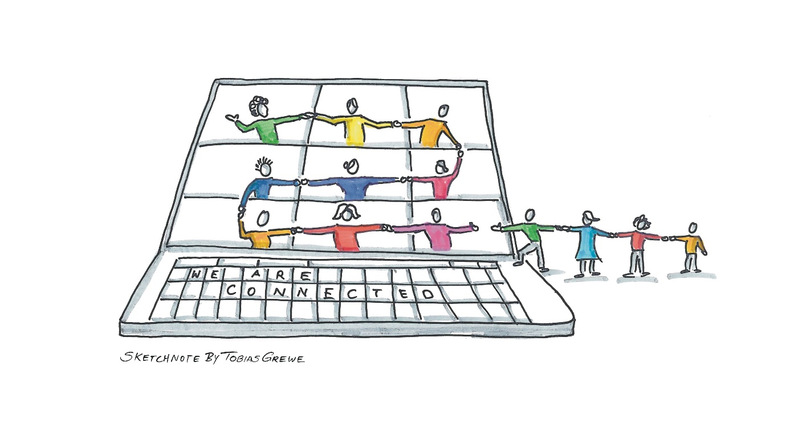
Britta Müller-Ruhnau, Daniel Prial, Fabienne Theis, Magnus Rode, Rainer Bartl, Stefanie Ammler
lernOS ist eine Methode zur Selbstorganisation für Menschen, die im 21. Jahrhundert leben und arbeiten. Um heute erfolgreich zu sein, muss man ständig lernen, sich organisieren und weiterentwickeln. Niemand sonst ist für diesen Prozess verantwortlich. Man muss sich selbst darum kümmern (selbstgesteuertes, lebenslanges Lernen).
lernOS Leitfäden stehen unter der Lizenz Creative Commons Namensnennung 4.0 International (CC BY 4.0):
Du darfst:
Teilen - das Material in jedwedem Format oder Medium vervielfältigen und weiterverbreiten.
Bearbeiten - das Material remixen, verändern und darauf aufbauen, und zwar für beliebige Zwecke, sogar kommerziell.
Unter folgenden Bedingungen:
Namensnennung - Du musst angemessene Urheber- und Rechteangaben machen, einen Link zur Lizenz beifügen und angeben, ob Änderungen vorgenommen wurden. Diese Angaben dürfen in jeder angemessenen Art und Weise gemacht werden, allerdings nicht so, dass der Eindruck entsteht, der Lizenzgeber unterstütze gerade Sie oder Ihre Nutzung besonders.
Keine weiteren Einschränkungen - Du darfst keine zusätzlichen Klauseln oder technische Verfahren einsetzen, die anderen rechtlich irgendetwas untersagen, was die Lizenz erlaubt.
Hinweise vorab für Unternehmen, die den Lernpfad verwenden wollen:
Unternehmen können den lernOS-Leitfaden für sich anpassen, um Beispiele und Tools aus dem eigenen Unternehmen zu integrieren.
Um die Einstiegshürde zu senken, ist eine Anpassung an die lokale IT-Landschaft innerhalb des Unternehmens möglich (erfolgt durch das jeweilige Unternehmen, ggf. in Zusammenarbeit von denen, welche die gleichen Tools nutzen).
Hinweis vorab für Guides, die den Lernpfad im eigenen Unternehmen verwenden wollen:
Als Guide kann ich den lernOS-Leitfaden für digitale Zusammenarbeit als Lernprogramm in unserem Unternehmen einsetzen, um unsere Mitarbeitenden bei ihrem Einstieg zu unterstützen. Dafür kann ich den Leitfaden an die bei uns eingesetzten Tools und Methoden anpassen sowie Stories aus unserem Unternehmen ergänzen.
Hinweis für Einzelpersonen, die den Lernpfad mit anderen verwenden wollen:
Unternehmensübergreifende Circle sind möglich, aber dafür muss die “Übersetzungsleistung” auf die Toolebene von den Teilnehmenden selbst gestemmt werden.
Wer mehr über lernOS erfahren möchte:
Video “lernOS - eine Einführung in lernOS, das offene System für Lebenslanges Lernen und Lernende Organisationen” von Simon Dückert
Weitere Informationen auf der lernOS-Website
Wenn du selbst einen Circle starten möchtest und nach weiteren Personen suchst, die mit dir gemeinsam auf Lernreise gehen, kannst du diese über die Peerfinder App finden.
Die lernOS-Community findest du hier.
Dieser #lernOS Leitfaden für die “Digitale Zusammenarbeit” ist im Rahmen des Netzwerks #GuidesExchange entstanden - natürlich komplett in digitaler Zusammenarbeit . Wir haben uns für die Arbeit am Leitfaden nie persönlich getroffen!
Wir haben sowohl synchron in 2-wöchentlichen und zusätzlichen thematischen Treffen als auch asynchron an diesem Leitfaden gearbeitet in einem gemeinsamen OneNote-Notizbuch in MS Teams.
Wieso haben wir uns mit dem Thema “Digitale Zusammenarbeit”
beschäftigt?
Und was ist dieses #GuidesExchange Netzwerk?
Es war einmal in einem Working-Out-Loud-Circle im Jahr 2018. Bei Working Out Loud (#WOL) ist die Vernetzung mit anderen ein zentrales Thema. Und daher war es Magnus’ Ziel in diesem Circle, sich mit anderen Guide- & Multiplikatoren-Netzwerken auszutauschen und gemeinsam voneinander zu lernen, da er selbst gerade am Aufbau eines Multiplikatoren-Netzwerks in seinem Konzern arbeitete.
Manchmal dauert es etwas länger als die 12 Wochen in einem WOL-Circle, die Früchte dieser Arbeit zu ernten: Ein Tweet von Julia Wieland im Dezember 2019 bot die Grundlage, eine gemeinsame Community zu initiieren. Ab Januar 2020 haben wir uns unternehmensübergreifend (Cross-Company) regelmäßig in dieser #GuidesExchange Community getroffen mit dem Ziel, uns miteinander über die Herausforderungen in unseren Guide- und Multiplikatoren-Netzwerken auszutauschen und uns gegenseitig zu unterstützen.
Im Sommer 2020 stellte Leonid Lezner in einem Post auf Cogneon CONNECT die Idee vor, die “Digitale Zusammenarbeit im Konzern” in einem Circle ähnlich wie #WOL zu erlernen. Wir haben Leonid eingeladen, diese Idee in einem Workshop der #GuidesExchange Community vorzustellen und zu diskutieren. Denn die Herausforderungen bei der Einführung von Kollaborationslösungen wie z.B. Microsoft 365 waren in vielen unserer Unternehmen ähnlich.
Seit Oktober 2020 arbeiteten wir daraufhin in einer Untergruppe der #GuidesExchange Community daran, einen #lernOS Leitfaden “Digitale Zusammenarbeit” zu erstellen.
Unser Ziel war ein Circle Leitfaden für alle, die in Kleingruppen wie bei #WOL in 12 Wochen lernen möchten, die digitale Zusammenarbeit in ihre tägliche Arbeit zu integrieren, um ihre Aufgaben effizienter zu lösen. Dabei sollte der Leitfaden einfach an die im jeweiligen Unternehmen verwendeten Tools und Methoden angepasst werden können. Das wiederum würde uns die Arbeit in den Guide- und Multiplikatoren-Netzwerken vereinfachen.
Wir haben unsere gemeinsamen Erfahrungen zusammengetragen und in
einen Theorie-Teil sowie Aufgaben in Form der #lernOS Katas für die
einzelnen Wochen im Circle aufbereitet.
Dabei gilt:
“Eat your own dogfood” - Alles was wir hier schreiben, haben wir auch
selbst ausprobiert.
Wir danken allen für die wertvollen Impulse zum Leitfaden!
Wir danken zudem der #lernOS-Community für den Austausch und Inspirationen beim Schreiben von #lernOS Leitfäden, ganz besonders Simon Dückert für seine Unterstützung, das #lernOS Konzept und den Workflow nebst Template zum Erstellen der vielen Formate!
Wir danken der #GuidesExchange Community für den offenen Austausch und den Rahmen für die Erstellung dieses Leitfadens!
Geschrieben wurde der Leitfaden von:
Britta Müller-Ruhnau
Daniel Prial
Fabienne Theis
Magnus Rode
Rainer Bartl
Stefanie Ammler
Wir bedanken uns für die Mitarbeit am Leitfaden und Unterstützung bei:
Bernd Aures
Hans-Jürgen Sturm
Leonid Lezner
Ein ganz besonderer Dank für die tollen Sketchnotes gilt:
Wir danken allen, die den Leitfaden in der Pilotphase als Einzelpersonen und in Unternehmen testen und uns Feedback für die Verbesserung geben!
Dankeschön!
Habt ihr Fragen, Kommentare, Hinweise, Kritik, Anmerkungen?
Meldet euch gerne an: feedback@circle.guide
Keep calm & learn on!
Der Lernpfad “Digitale Zusammenarbeit” richtet sich an alle Menschen im beruflichen Kontext, …
… die festgestellt haben, dass digitales Arbeiten aus mehr als E-Mail- und Office-Programmen besteht,
… die gegenüber digitaler Zusammenarbeit aufgeschlossen sind und mehr darüber lernen möchten,
… die sich noch ein bisschen mehr Orientierung in der digitalen Welt wünschen,
… die schon erste Erfahrungen mit kollaborativen Tools gemacht haben; aber auch Newbies sind herzlich willkommen.
Der Einstieg in die digitale Zusammenarbeit ist sehr individuell. Es gibt nicht den einen Einstieg. Jede:r hat einen unterschiedlichen Zugang. Wir haben uns bei der Erstellung des Lernpfads selbst die Frage gestellt, was digitale Zusammenarbeit für uns bedeutet. Hier ein paar exemplarische Zitate:
“Dann kam Corona … und alle wollten auf einmal digital arbeiten. In dieser Zeit habe ich an vielen Webinaren teilgenommen, um weitere Ideen zu sammeln und neue Tools kennenzulernen, wie beispielsweise Mural, Miro etc., um diese ins Unternehmen zu tragen und digitale Zusammenarbeit erlebbar zu machen.”
“Ende 2019 ist meine Teamleiterin für einige Wochen nach Tokio gewechselt, so dass wir auch in meinem Team Bedarf hatten, digitale Zusammenarbeit auszuprobieren und zu lernen. Dabei haben wir MS Teams erfolgreich im Team eingeführt und verwenden es noch heute für den Austausch zu Fachthemen und organisatorischen Belangen.”
“Mit kleinen Sachen viel erreichen: MS Teams anstelle von E-Mails genutzt, Dokumente in SharePoint freigeben für die Zusammenarbeit, Forms-Umfragen eingebaut etc. (Mindset-Change).”
“Ich bin froh, damals unser Vernetzungstool entdeckt und seitdem aktiv für den Wissensaustausch mit Kolleg:innen aus anderen Konzernbereichen genutzt zu haben. Die Informationen aus Yammer haben mir in meiner täglichen Arbeit viele Vorteile gebracht.”
So macht sich jede:r auf den Weg und lernt immer wieder dazu. Wenn ihr den Lernpfad in der Gruppe macht, habt ihr den Vorteil gleichzeitig von- und miteinander zu lernen. Jede:r von euch hat eine andere Zielstellung, eine andere Motivation. Was euch alle verbindet, ist: ihr wollt alle dazu lernen. Und das ist es, worauf es ankommt.
Bitte erwartet hier keine fertige Schritt-für-Schritt-Anleitung. Der Lernpfad begleitet euch auf dem Weg. Hauptbestandteil wird sein, neue Dinge auszuprobieren, eigene Anwendungsfälle zu finden und im geschützten Raum zu testen, bevor ihr es im Team, eurer Abteilung etc. einführt.
Daher die Hashtags für den Leitfaden “Digitale Zusammenarbeit”:
#lernOS #digitaleZusammenarbeit #collaboration
#EinfachAusprobieren #EinfachMalMachen (z.B. wenn ihr in Social
Media über eure Lernreise schreibt)
Wir kennen oder hören Buzzwörter wie “Digitale Transformation” und “VUCA-Welt”.
Konkret bedeutet das im beruflichen Kontext, dass neue Kompetenzen und Skills aber auch andere Arbeitsweisen notwendig sind, um den aktuellen Herausforderungen (z.B. Mobile Office, remote work, New Work) zu begegnen. Dadurch entstehen auch neue Konzepte der Zusammenarbeit, auf die man sich einlassen muss und darf.
Der Leitfaden für digitale Zusammenarbeit setzt genau dort an. Neben den Tools stehen Methoden und Strategien der digitalen Zusammenarbeit, Vernetzung und Wissensverbreitung im Vordergrund.
Viele Formate und Methoden, die in diesem Leitfaden auftauchen, existieren auch in der analogen Welt. Hier werden Möglichkeiten gezeigt, diese im digitalen Kontext umzusetzen. Zudem können viele sowohl synchron (zeitgleich) als auch asynchron (zeitversetzt) angewendet werden. In diesem Zusammenhang spricht man dann von Kollaborationstools, die zum Einsatz kommen.
Im Folgenden seht ihr die verschiedenen Szenarien für digitale Zusammenarbeit in Verbindung mit der Reichweite und den Tools:
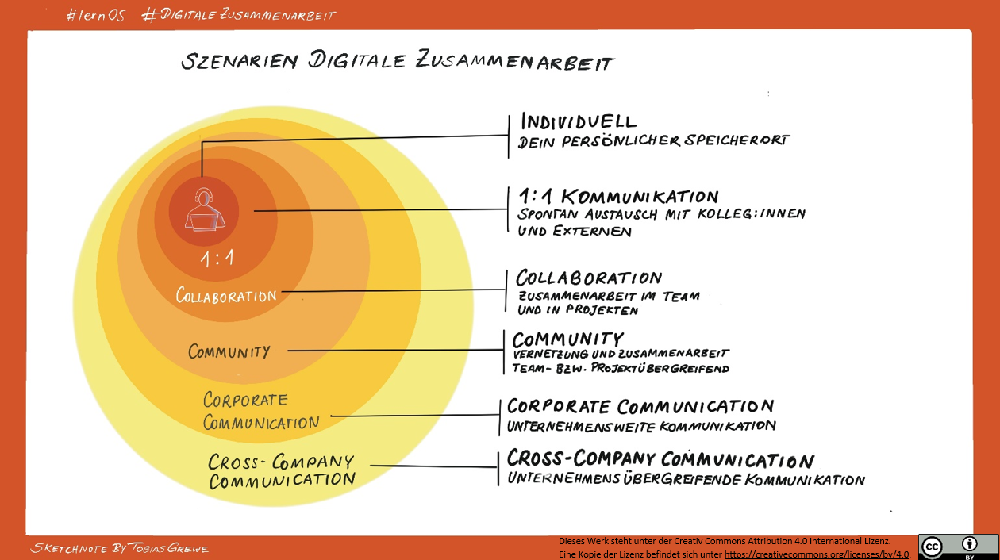
Die digitale Zusammenarbeit von Teams erfordert Kollaborationstools, die dies ermöglichen. Dadurch können sich Teams aus unternehmensinternen und -externen Personen zusammenfinden, um gemeinsam an Projekten und Themen zu arbeiten.
Digitale Kollaborationstools sind Anwendungen, welche die Zusammenarbeit im Team, in der Abteilung und im Unternehmen digital ermöglichen. Dabei wird auch die interne Kommunikation gefördert. Bekannte Beispiele sind z.B. MS Teams, Slack, Planner, Asana und Mural.
Hinweise zum Umgang mit Schatten-IT:
Wir geben Beispiele für Tools. Du musst diese nochmal prüfen und unternehmenskonform damit umgehen.
Für Unternehmen, die sich den Guide anpassen, gilt dasselbe. Ihr seid hier in der Verantwortung.
Zur digitalen Zusammenarbeit gehören u.a. die folgenden Aspekte:
Kommunikation (Chat, Video-Calls, ESN, …)
Wissen teilen
Gemeinsam an Dokumenten arbeiten
Retrospektive
Beziehungsarbeit
Entscheidungen treffen
Planen
Brainstorming und Ideenfindung
Es gibt noch viel mehr. In diesem Leitfaden fokussieren wir uns auf die fett markierten Aspekte.
Die Abbildung verdeutlicht noch mal das Zusammenspiel:
Wenn du den Lernpfad durcharbeitest, dann
verstehst du, was digitale Zusammenarbeit bedeutet und warum das wichtig ist,
lernst du Strategien kennen, um digitale Zusammenarbeit im Unternehmenskontext umzusetzen,
kennst du verschiedene Tools, Methoden und Möglichkeiten, um digital zusammenzuarbeiten,
erkennst du, dass immer wieder neue Formen der digitalen Zusammenarbeit entstehen.
Der Leitfaden “digitale Zusammenarbeit” umfasst wirklich viele Themen, die sich nicht immer leicht in gekürzter Form darstellen lassen. Deshalb: Habe den Mut einfach anzufangen. Beginne deine ganz persönliche Lernreise.
In den nächsten 1 + 12 Wochen wirst du dich intensiv mit dem Thema digitale Zusammenarbeit beschäftigen.
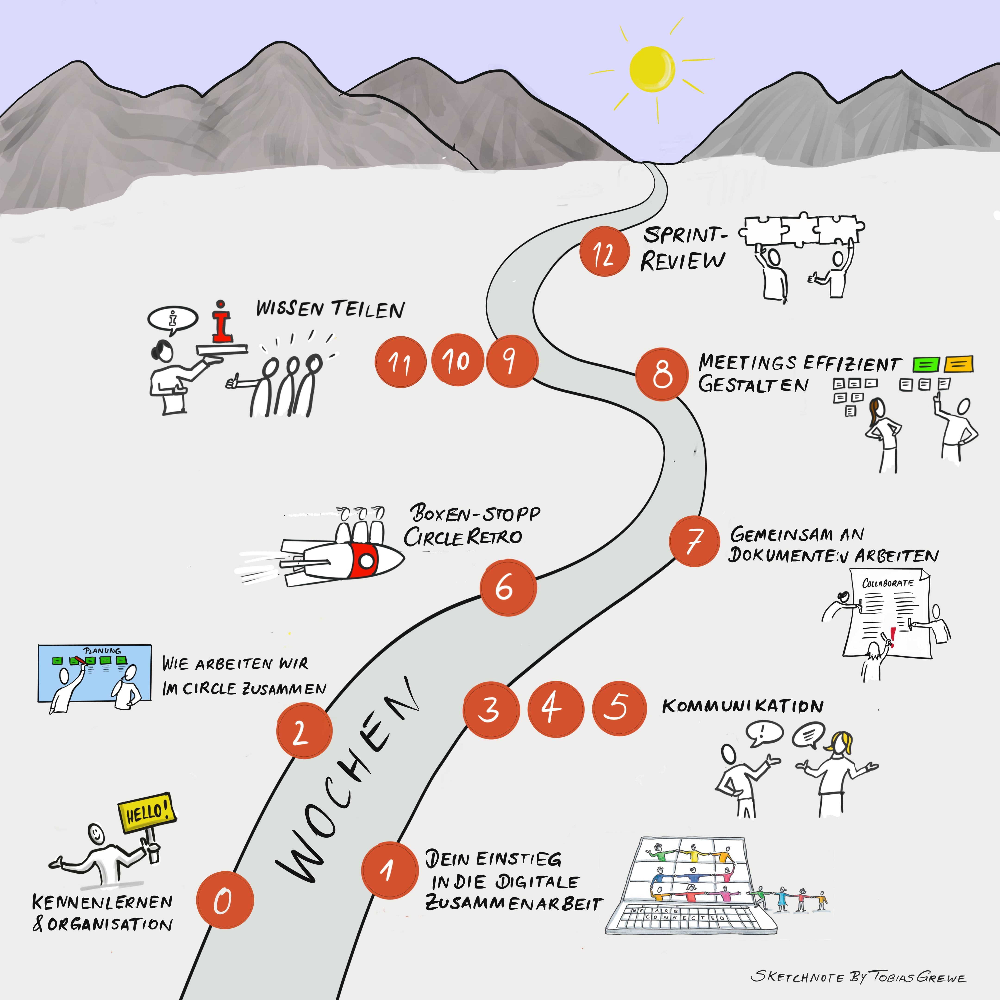
Hier die Wochen im Überblick:
In der Woche 0 geht es darum, die Lernreise vorzubereiten, sich klar zu werden über die eigene Motivation und mit der Lerngruppe zu verabreden, wie ihr euch in der Zeit organisieren wollt.
In Woche 1 beschäftigst du dich mit deinem individuellen Einstieg in die digitale Zusammenarbeit. Dazu erstellst du eine individuelle Standortbestimmung.
In Woche 2 erstellt ihr gemein das Collaboration Canvas für eure Zusammenarbeit im Circle und legt damit eure Regeln der Zusammenarbeit fest.
In den Wochen 3-5 geht es um verschiedene Aspekte rund um das Thema Kommunikation. Du lernst geeignete Tools aber auch Kanäle für die Kommunikation kennen und erfährst, wie du deine Kommunikation optimal ausrichtest.
In der Woche 6 erfolgt ein Boxenstopp, indem ihr eine Circle-Retrospektive durchführt.
In Woche 7 steht das gemeinsame Arbeiten an Dokumenten im Mittelpunkt. Du lernst, was dabei in der digitalen Zusammenarbeit zu berücksichtigen ist.
In Woche 8 erhältst du Anregungen, wie du Meetings effizient gestalten kannst.
In den Wochen 9-11 liegt der Schwerpunkt auf Wissen teilen. Du behandelst dabei die Aspekte “nehmen”, “sichtbar werden” und “geben”.
In der Woche 12 erwartet dich ein Sprint-Review. Hier reflektierst du deine Lernreise.
Für jede Woche gibt es eine Agenda mit folgendem Aufbau:
Check-in
Hauptthema
Check-out
Hausaufgabe
Auf deiner Lernreise begegnest du wöchentlich einer sogenannten Kata, was so viel wie “Übung” bedeutet. Die Lernreise ist so angelegt, dass du in der Vor-Woche die jeweilige Kata für die nächste Woche als Hausaufgabe vorbereitest, so dass ihr euch gemeinsam darüber im Circle austauschen könnt.
Bitte plane pro Woche mindestens 2 Stunden Zeit ein: 1 Stunde für das gemeinsame Treffen und 1 Stunde (oder mehr) für deine Hausaufgabe. Vor- und Nachbereitungszeiten können dabei variieren.
Digitale Zusammenarbeit ist ein sehr umfangreiches Thema. Es können nicht alle Aspekte gleichermaßen erarbeitet werden. Auch ist euer Kenntnisstand jeweils unterschiedlich in den einzelnen Bereichen.
Bitte lege für dich deine Schwerpunkte fest und entscheide bei jeder Kata, ob du zusätzlich zum Lernpfad noch mehr machen willst - es gibt in jeder Kata weiterführende Tipps und Aufgaben für dich.
Bevor ihr euch auf den Weg macht, möchten wir euch die Kraft der kleinen Schritte vorstellen, die euch bei eurem Lernprozess motivieren soll. Das Diagramm von James Clear mit dem Titel „The Power of Tiny Gains” zeigt anschaulich, dass es sich lohnt, dran zu bleiben, auch wenn es am Anfang mühselig erscheint.
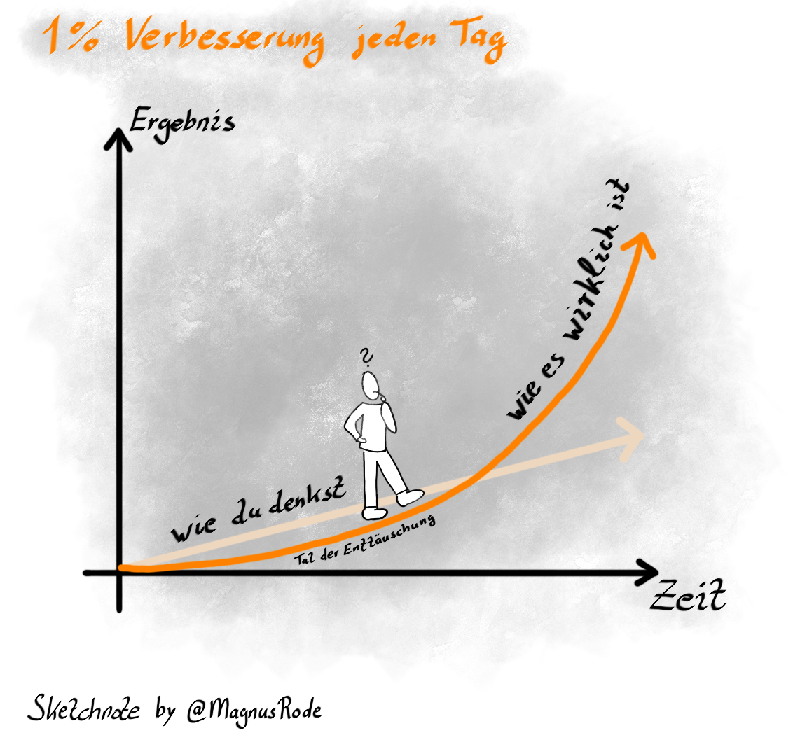 Zu wissen, dass “1% Verbesserung jeden Tag” helfen kann, zu lernen und voranzukommen, zeigt die Abbildung:
Und nun: viel Spaß bei deiner Reise!
Es geht los!
Eure lernOS-Digitale Zusammenarbeit-Reise beginnt heute.
Ihr lernt euch kennen und plant gemeinsam die nächsten 12 Wochen, in denen ihr euch einmal wöchentlich hören und sehen werdet.
Check-in: (25 Minuten)
Herzlich willkommen! Schön, dass ihr dabei seid!
Vorstellung: Jedes Circle-Mitglied stellt sich in 5 Minuten vor.
Viel Spaß beim Kennenlernen!
Hauptthema: (20 Minuten)
Plant, wann ihr euch trefft, welche Tools ihr nutzt und wer die
Moderation übernimmt, siehe Kata 0 -
Organisation und Circle-Setup für digitale Zusammenarbeit
Check-out: (5 Minuten)
Bitte bestätigt das nächste Treffen. Was wirst du bis zum nächsten
Weekly tun?
Hausaufgabe:
Bereite bitte bis zur nächsten Woche Kata 1 -
Standort-Bestimmung vor und lege dein lernOS-Canvas sowie deinen
lernOS Workplace in der gemeinsamen Dokumentenablage ab, so dass ihr
diese alle vorher anschauen und beim nächsten Treffen darüber sprechen
könnt.
Heute geht es um die individuelle Standortbestimmung. Ihr sprecht über euer lernOS Canvas und lernOS Wheel.
Kleiner Exkurs: Jede:r startet von einem anderen Standort und hat womöglich andere Ziele. Das ist völlig normal.
Dies verdeutlicht auch noch mal die Parabel vom „König von Savatthi”. Während eures Circles ist es wichtig, dass ihr diese Standorte von euch gegenseitig kennt und im Blick behaltet. So ist eine gegenseitige Unterstützung viel gewinnbringender.
Parabel vom „König von Savatthi”
Die Parabel vom „König von Savatthi” auch bekannt unter „Die blinden Männer und der Elefant” verdeutlicht sehr anschaulich, welchen Einfluss Erfahrungen und die individuelle Perspektive auf die Gesamtsicht haben können. In der Parabel untersuchen mehrere blind geborene Männer im Auftrag des Königs einen Elefanten. Jeder von Ihnen untersucht einen Teil des Elefanten, aber eben nur genau einen Teil. Basierend auf ihren Kenntnissen und Erfahrungen ziehen sie Vergleiche und berichten anschließend dem König aus ihrer individuellen Perspektive heraus, was für sie ein Elefant ist.
Aus <https://prozesselefant.de/perspektive>
Check-in: (10 Minuten)
Was hat mich die letzte Woche im Zusammenhang mit digitaler
Zusammenarbeit beschäftigt?
Zwei-Minuten-Timebox pro Circle-Mitglied!
Hauptthema: (45 Minuten)
Stellt euch gegenseitig eure Kata 1 -
Standort-Bestimmung vor und tauscht euch darüber aus.
Check-out: (5 Minuten)**
**Was werde ich bis zum nächsten Weekly tun?
Hausaufgabe:
Bereite bitte bis zur nächsten Woche Kata 2 -
Wie arbeiten wir zusammen? vor.
“Unser Einstieg in die digitale Zusammenarbeit”
Nachdem ihr in der letzten Woche euren eigenen Standort bestimmt habt, wollen wir in dieser Woche den Fokus auf die digitale Zusammenarbeit in eurem Circle richten.
Ihr seid das erste Team, in dem ihr die gelernten Dinge aktiv ausprobieren und umsetzen könnt. Denn wie so häufig im Leben lernst du am besten in der eigenen Anwendung.
Check-in: (10 Minuten)
Was hat dich die letzte Woche im Zusammenhang mit digitaler
Zusammenarbeit beschäftigt?
Zwei-Minuten-Timebox pro Circle-Mitglied.
Hauptthema: (45 Minuten)
Check-out: (5 Minuten)
Was werdet ihr bis zum nächsten Weekly tun?
Hausaufgabe:
Bereite bitte bis zur nächsten Woche Kata 3 -
Analysiere und reflektiere deine Kommunikation vor.
In den folgenden 3 Wochen geht es um das Thema Kommunikation.
Hier ist es wichtig, Frustration und Stress zu vermeiden, indem du deine Kommunikation optimal ausrichtest. Hilfreich ist es auch, die geeigneten Kanäle/Tools auszuwählen, um eine schnelle und effektive Zusammenarbeit mit Internen und Externen zu ermöglichen. Alles mit dem Ziel deinen Umgang mit eingehender Kommunikation zu optimieren.
Wir beginnen in dieser Woche damit, deine Kommunikation zu analysieren und zu reflektieren.
Check-in: (10 Minuten)
Was hat dich die letzte Woche im Zusammenhang mit digitaler
Zusammenarbeit beschäftigt?
Zwei-Minuten-Timebox pro Circle-Mitglied.
Hauptthema: (45 Minuten)
Stellt euch gegenseitig eure Ergebnisse und Erkenntnisse aus der Kata 3 - Analysiere und reflektiere deine
Kommunikation vor und tauscht euch darüber aus.
Check-out: (5 Minuten)
Was werdet ihr bis zum nächsten Weekly tun?
Hausaufgabe:
Bereite bitte bis zur nächsten Woche Kata 4 -
Lerne deine Tools kennen vor.
In dieser Woche lernst du geeignete Tools für die Kommunikation kennen.
Check-in: (10 Minuten)
Was hat dich die letzte Woche im Zusammenhang mit digitaler
Zusammenarbeit beschäftigt?
Zwei-Minuten-Timebox pro Circle-Mitglied.
Hauptthema: (45 Minuten)
Stellt euch gegenseitig eure Ergebnisse und Erkenntnisse aus der Kata 4 - Lerne deine Tools kennen vor und
tauscht euch darüber aus.
Check-out: (5 Minuten)
Was werdet ihr bis zum nächsten Weekly tun?
Hausaufgabe:
Bereite bitte bis zur nächsten Woche Kata 5 -
Wähle einen passenden Kanal vor.
In dieser Woche lernst du geeignete Kanäle auszuwählen, um eine schnelle und effektive Zusammenarbeit mit Internen und Externen zu ermöglichen.
Check-in: (10 Minuten)
Was hat dich die letzte Woche im Zusammenhang mit digitaler
Zusammenarbeit beschäftigt?
Zwei-Minuten-Timebox pro Circle-Mitglied.
Hauptthema: (45 Minuten)
Stellt euch gegenseitig eure Ergebnisse und Erkenntnisse aus der Kata 5 - Wähle einen passenden Kanal vor und
tauscht euch darüber aus.
Check-out: (5 Minuten)
Was werdet ihr bis zum nächsten Weekly tun?
Hausaufgabe:
Bereite bitte bis zur nächsten Woche Kata 6 -
Retro vor.
Hier wollen wir auf die ersten Wochen zurückblicken, um die
Zusammenarbeit im Circle für die verbleibenden Wochen anpassen zu
können.
In der Vorbereitung zur Kata 6 habt ihr euch einen guten Überblick zur Retrospektive verschafft.
Heute geht es um die praktische Anwendung. Anwendungsfall ist eure bisherige Circle-Lernpfad-Zusammenarbeit. Wie ist es euch damit ergangen? Was wollt ihr weglassen? Wovon wünscht ihr euch mehr?
Check-in: (10 Minuten)
Was hat dich die letzte Woche im Zusammenhang mit digitaler
Zusammenarbeit beschäftigt?
Zwei-Minuten-Timebox pro Circle-Mitglied.
Hauptthema: (45 Minuten)
Check-out: (5 Minuten)
Was werdet ihr bis zum nächsten Weekly tun?
Hausaufgabe:
Bereite bitte bis zur nächsten Woche Kata 7 -
Dokumente gemeinsam bearbeiten vor.
Nun wollen wir basierend auf unseren Regeln für die Zusammenarbeit einen Schritt weiter gehen und Dokumente nicht nur miteinander teilen, sondern auch gemeinsam erarbeiten. Als konkretes Beispiel dient eine Sammlung der “besten Hacks für die digitale Zusammenarbeit”. Ihr habt als Hausaufgabe mit der Kata 7 - Dokumente gemeinsam bearbeiten schon begonnen, gemeinsam an einem Dokument zu arbeiten. Diese Arbeit werdet ihr bis zum Ende des Circles zusammen (asynchron) weiterführen.
Check-in: (10 Minuten)
Was hat dich die letzte Woche im Zusammenhang mit digitaler
Zusammenarbeit beschäftigt?
Zwei-Minuten-Timebox pro Circle-Mitglied.
Hauptthema: (45 Minuten)
Stellt euch gegenseitig eure Ergebnisse und Erkenntnisse aus der Kata 7 - Dokumente gemeinsam bearbeiten vor und
tauscht euch darüber aus.
Check-out: (5 Minuten)
Was werdet ihr bis zum nächsten Weekly tun?
Hausaufgabe:
Bereite bitte bis zur nächsten Woche Kata 8 -
Meetings effizient gestalten vor.
In dieser Woche besprechen wir die Sammlung der Hacks seit dem letzten Treffen. Wir wenden unsere Erkenntnisse über das gemeinsame Bearbeiten von Dokumenten an, um damit unsere Meetings effizienter zu gestalten. Denn Zeit ist das wertvollste und knappste Gut, das wir haben - gehe achtsam damit um.
Check-in: (10 Minuten)
Was hat dich die letzte Woche im Zusammenhang mit digitaler
Zusammenarbeit beschäftigt?
Zwei-Minuten-Timebox pro Circle-Mitglied.
Hauptthema: (45 Minuten)
Check-out: (5 Minuten)
Was werdet ihr bis zum nächsten Weekly tun?
Hausaufgabe:
Bereite bitte bis zur nächsten Woche Kata 9 -
Wie kannst Du selbst vom Wissen anderer profitieren und Dankbarkeit
zeigen (#Nehmen)? vor.
“Sharing is caring!” - Ein Slogan, der gerne verwendet wird - aber
wer macht’s denn?
Sicher, man freut sich, wenn man “brauchbares Wissen” findet, nach dem
man gesucht hat.
Aber selbst Wissen teilen? So viel Aufwand (Zeit + Energie)
betreiben?
Und doch ist es so einfach und leicht vom Wissensnehmenden zum
Wissensgebenden zu werden, wenn man sich ganz bewusst auf diese
Lernreise begibt.
Und jede Reise beginnt mit einem ersten, kleinen Schritt.
Check-in: (10 Minuten)
Was hat dich die letzte Woche im Zusammenhang mit digitaler
Zusammenarbeit beschäftigt?
Zwei-Minuten-Timebox pro Circle-Mitglied.
Hauptthema: (45 Minuten)
Stellt euch gegenseitig eure Ergebnisse und Erkenntnisse aus der Kata 9 - Wie kannst Du selbst vom Wissen anderer
profitieren und Dankbarkeit zeigen (#Nehmen)? vor und tauscht euch
darüber aus.
Check-out: (5 Minuten)
Was werdet ihr bis zum nächsten Weekly tun?
Hausaufgabe:
Bereite bitte bis zur nächsten Woche Kata 10 -
Wie ich mit meinem Wissen im Unternehmen sichtbar werde
(#SichtbarWerden) vor.
Wer sich auf den Weg macht und sich mit dem Thema “Wissen teilen” beschäftigt, wird auf Gleichgesinnte treffen und diese Erfahrungen machen:
Check-in: (10 Minuten)
Was hat dich die letzte Woche im Zusammenhang mit digitaler
Zusammenarbeit beschäftigt?
Zwei-Minuten-Timebox pro Circle-Mitglied.
Hauptthema: (45 Minuten)
Stellt euch gegenseitig eure Ergebnisse und Erkenntnisse aus der Kata 10 - Wie ich mit meinem Wissen im
Unternehmen sichtbar werde (#SichtbarWerden) vor und tauscht euch
darüber aus.
Check-out: (5 Minuten)
Was werdet ihr bis zum nächsten Weekly tun?
Hausaufgabe:
Bereite bitte bis zur nächsten Woche Kata 11 -
Was meine Kolleg:innen von meinem aktiven Teilen von
Wissen/Informationen haben (#Geben) vor.
Wissen teilen - das klingt so groß, wie das Erstellen einer
wissenschaftlichen Arbeit.
Aber das können auch ganz kleine Dinge sein, z.B. Tipps & Tricks,
die anderen die Arbeit einfacher machen und für dich keinen großen
Aufwand bedeuten, z.B. durch das Beantworten von Fragen im Chat,
Diskussionsforen und Kommentare sowie Ergänzungen zu anderen
Beiträgen.
Check-in: (10 Minuten)
Was hat dich die letzte Woche im Zusammenhang mit digitaler
Zusammenarbeit beschäftigt?
Zwei-Minuten-Timebox pro Circle-Mitglied.
Hauptthema: (45 Minuten)
Stellt euch gegenseitig eure Ergebnisse und Erkenntnisse aus der Kata 11 - Was meine Kolleg:innen von meinem
aktiven Teilen von Wissen/Informationen haben (#Geben) vor und
tauscht euch darüber aus.
Check-out: (5 Minuten)
Was werdet ihr bis zum nächsten Weekly tun?
Hausaufgabe:
Bereite bitte bis zur nächsten Woche Kata 12 -
Selbstreflexion vor.
Ihr seid fast am Ziel angekommen. Heute ist die letzte Woche des Lernpfads. Ihr sprecht über eure Selbstreflexion zum Lernprozess. Wenn ihr wollt, könnt ihr auch noch mal eine Retro machen. Das kennt ihr noch aus Woche 6 (Kata 6 - Retro).
Check-in: (10 Minuten)
Was hat dich die letzte Woche im Zusammenhang mit digitaler
Zusammenarbeit beschäftigt?
Zwei-Minuten-Timebox pro Circle-Mitglied.
Hauptthema: (45 Minuten)
Stellt euch gegenseitig eure Ergebnisse und Erkenntnisse aus der Kata 12 - Selbstreflexion vor und tauscht
euch darüber aus.
Wenn noch Zeit übrig ist und ihr wollt, könnt ihr auch noch mal eine
Retro machen [Kata 6 - Retro].
Besprecht auf jeden Fall auch, wie ihr mit den gemeinsam erstellten und oder geteilten Dokumenten weiter vorgehen wollt.
Feiern: (beliebig lange)
Feiert euren Lernerfolg!
Entweder heute oder ihr verabredet euch für einen separaten Termin.
Check-out: (5 Minuten)
Wie geht ihr auseinander?
Wollt ihr euch womöglich noch mal treffen, um weiter dran zu bleiben?
Ggf. in anderen zeitlichen Abständen?
Super, dass ihr bis hierher dabei geblieben seid und eure Kompetenz der digitalen Zusammenarbeit weiter aufgebaut habt. Hier geht’s zum Abschluss.
Einstieg & Vorbereitung
In dieser ersten Kata geht es darum, dass ihr euch als Circle organisiert.
Circle-Moderation und Timekeeping: Wer moderiert eure Treffen? Wer hat die Zeit im Blick?
Vorschlag: Wechselt euch in der Moderation und Timekeeping ab, so dass jede:r mal dran kommt!
Die Moderation beinhaltet:
Willkommen/Einleitung übernehmen
Zeit und Thema im Blick zu haben
Diskussionen einfangen
Commitments z.B. für die nächste Woche einfordern
nächsten Termin/Thema/Kata abstimmen (bzw. bestätigen)
Tag und Uhrzeit des Treffens: Wann trefft ihr euch? Wer stellt die Termine ein? (z.B. 12x freitags, 10 Uhr)
Verbindlichkeit und Pünktlichkeit: Euer Lernerfolg hängt von euch ab - d.h. haltet die Termine ein und seid pünktlich. Bitte plant euch zusätzliche Zeit für die wöchentliche Hausaufgabe (= Kata) ein, so dass ihr in der jeweiligen Woche auf das Hauptthema vorbereitet seid und eure Erfahrungen & Erkenntnisse austauschen könnt. So zeigt ihr Wertschätzung für euren Circle.
Tools: Was wollt ihr nutzen für eure Kommunikation, eure Treffen und für eure Dokumentation?
Klärt, ob alle Circle-Teilnehmenden diese Tools haben und anwenden können.
Um im #lernOS Circle selbst digital zusammen arbeiten zu können, ist es erforderlich, ein passendes Circle-Setup abzustimmen.
Denn wir wollen alles Gelernte möglichst gleich selbst anwenden und damit verstehen und verinnerlichen.
Anmerkung an Unternehmen, welche den Leitfaden für sich
anpassen:
Hier könnte ein Setup vorgeschlagen oder auch ein Template zur Verfügung
gestellt werden. Mit professioneller Unterstützung könnte den Circles
auch bereits eine Umgebung voreingerichtet werden, z.B. im
Microsoft365-Umfeld ein Team in MS Teams mit eingebundenem
OneNote.
Folgende Punkte sind zu klären:
gemeinsame Kommunikations-Plattform (z.B. MS Teams, Slack, ggf. Messenger für die schnelle Kommunikation)
Videokonferenzlösung für Treffen (z.B. MS Teams, Zoom)
gemeinsame Dokumentenablage (z.B. MS Teams-Dokumente, SharePoint)
gemeinsame Dokumentation (z.B. OneNote, Padlet, Word-Dokument)
In dieser Übung beschäftigst du dich mit deiner persönlichen Standortbestimmung in Bezug auf die digitale Zusammenarbeit. Das lernOS Canvas zeigt nicht nur dir deinen Standort, sondern im Austausch mit den anderen Circle-Mitgliedern könnt ihr sehen, wo jede:r von euch steht und wie und wo ihr euch gegenseitig unterstützen könnt. Das lernOS-Wheel gibt euch einen Überblick über die verwendeten Tools, dein Skill- und Mindset.
Lade dir die Vorlage des lernOS Canvas herunter, welches in verschiedenen Formaten (z.B. PowerPoint, PDF, PNG) dort vorliegt. Oder alternativ kopiere dir die PowerPoint aus den Vorlagen.
Fülle das lernOS Canvas aus.
Bitte lege dein persönliches lernOS Canvas am Ort ab, den ihr in der Woche 0 festgelegt habt.
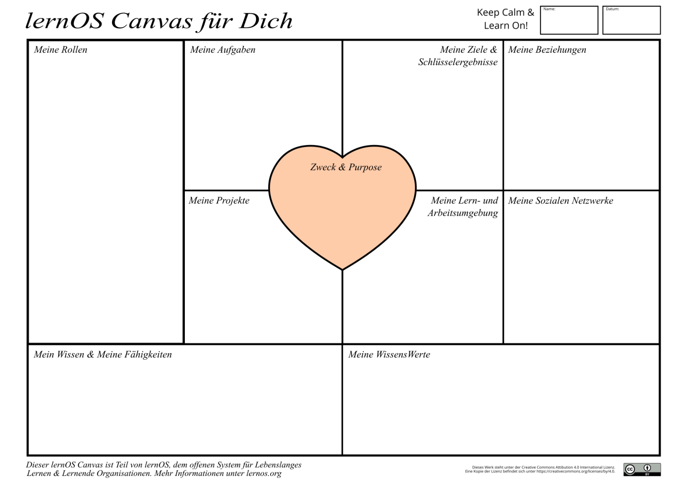
In dieser Kata geht es darum deinen persönlichen Workplace zu erstellen und dir die drei Dimensionen genauer anzuschauen. Für mehr schaue dir den lernOS-for-You Guide an.
In deinem persönlichen Entwicklungsprozess ist es wichtig, alle drei Dimensionen des lernOS Workplace zu kennen und zu berücksichtigen.
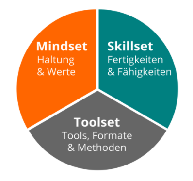
Wo startest du (persönlich) mit dem Thema?
Toolset:
Schreibe in deiner Vorlage auf, welche
Tools du bereits kennst, sowohl aus dem privaten als auch aus dem
beruflichen Kontext.
Skillset:
Was sind die Fähigkeiten, die du mitbringst?
Mindset:
Überlege dir, welche Haltung du zum Thema digitale Zusammenarbeit
mitbringst und welche deiner Werte darauf ein zielen.
Bitte lege dein persönliches lernOS Workplace am Ort ab, den ihr in der Woche 0 festgelegt habt.
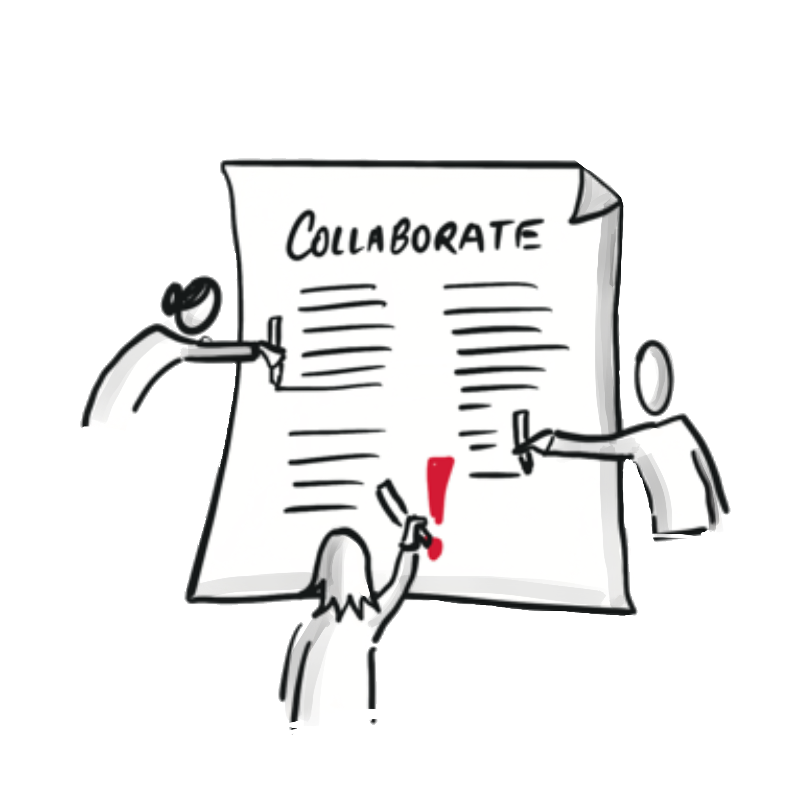 Zusammenarbeit (Teil 1)
Lies dir zur Vorbereitung die Grundlagen durch: Grundlagen: Zusammenarbeit
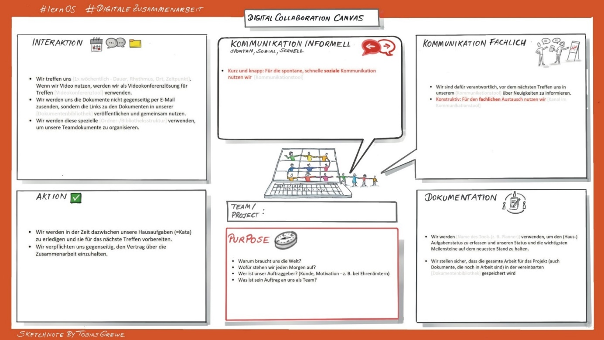 Zum Einstieg
in den Bereich “Zusammenarbeit” schau dir das Collaboration
Canvas an.
Nachdem du deine Standortbestimmung erstellt und mit den anderen geteilt
hast, geht es jetzt darum, euren gemeinsamen Workplace festzulegen.
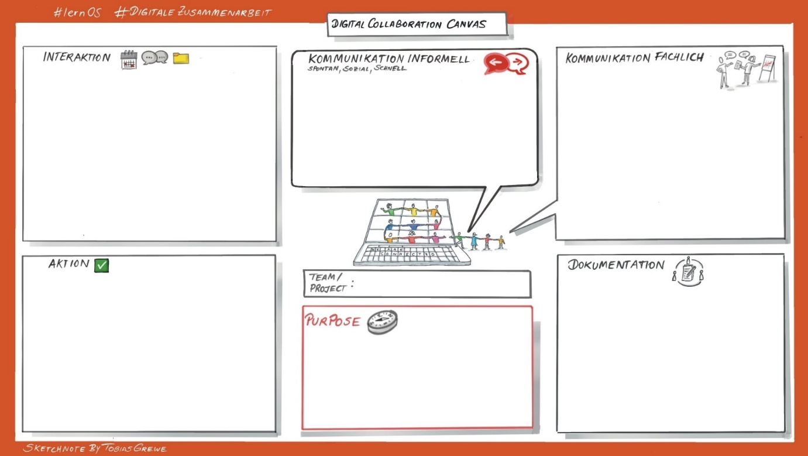
Überlege, welche Vereinbarungen für die Zusammenarbeit du bereits in
deinem beruflichen Kontext kennst.
Hast du welche? Wenn ja, welche sind dir wichtig und warum? Mache dir
dazu Notizen.
Überlege dir, wie ihr gerade im Circle zusammen arbeitet. Was passt bzw. was passt nicht bezüglich eurer Vereinbarungen in Woche 0? Mache dir dazu Gedanken, so dass ihr in der Woche 2 dann zusammen mit allen Circle-Mitgliedern eure gemeinsamen Zusammenarbeitsregeln erstellen könnt.
Verwendet im Circle-Treffen das Collaboration Canvas und formuliert eure gemeinsamen Regeln der Zusammenarbeit.
Weiterführende Informationen findest du hier zusammengestellt: Regeln für die Zusammenarbeit, Vertiefung und Idee zur Umsetzung.
Als Anregung - nimm diese Regeln der Zusammenarbeit zum Anlass und
erarbeite mit deinem eigenen Team im beruflichen Kontext ein eigenes Collaboration
Canvas.
Nach einem Monat kannst du mit deinem Team dazu eine Retro durchführen und teilt eure
Erfahrungen.
Kommunikation
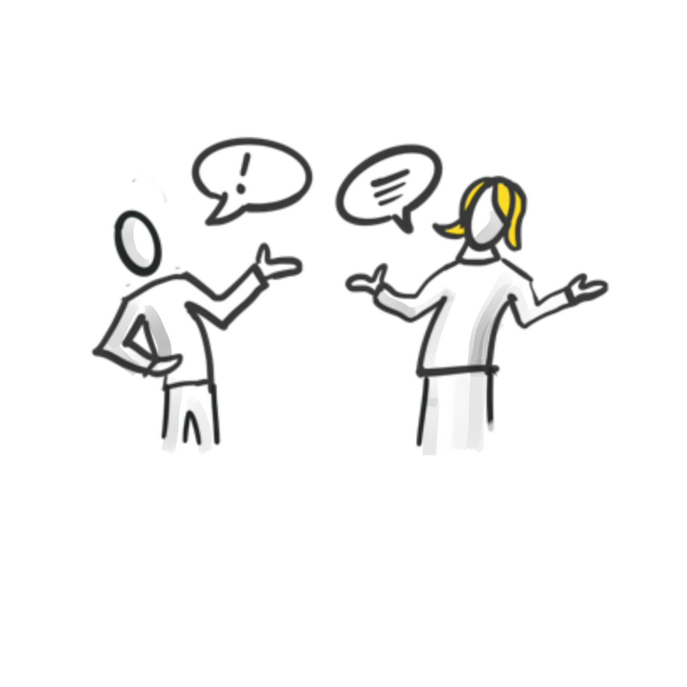
Lese dir zur Vorbereitung die Grundlagen durch:
Welche Kommunikationskanäle nutzt du schon, welche kennst du noch (nutzt sie aber nicht)?
Schaue durch deine Kommunikations-Kanäle!
Welche Kommunikation läuft gut / welche erzeugt Stress?
Schaue deine Kommunikations-Kanäle (z.B. E-Mail-Eingang/Chat-Nachrichten/o.ä.) durch:
Welche Nachricht/Informationen kommen wo an?
Wann/wie benötigst du die Informationen?
Findest du die Informationen schnell/leicht wieder?
Was nervt dich? z.B. Einladung zu Meeting ohne Agenda, CC-Mail an alle
Was sind deine Bedürfnisse?
Prüfe deinen Erwartungshorizont: Was hilft dir? Was kannst du ändern?
Tipp: Lass das sein, was dich genervt hat! ;-)
Lege eine Liste aller genutzten Kanäle an, so dass ihr dann im Circle eine gemeinsame Liste erstellen könnt.
Kommunikations-Tools bieten viele Einstellungsmöglichkeiten, um dir die tägliche Arbeit zu erleichtern.
Wähle deine präferierten Kommunikationstools aus und überlege, wie du
sie bisher nutzt.
Gehe durch jedes Menü: Welche Bereiche hast du bisher noch nie
benutzt?
Findest du Stichworte in den Menüs, die dich neugierig machen?
Schaue dir dabei beispielsweise die folgenden Programme und Punkte an:
E-Mail (Beispiel Outlook; Thunderbird):
Chat (Beispiel MS Teams, Slack):
Videokonferenzen (Beispiel MS Teams, Zoom):
Welche neuen Funktionen hast du gefunden? Welche Funktionen wirst du wie zukünftig nutzen?
Schaue im Internet und suche weiterführende Anleitungen zu den jeweiligen Tools, die du nutzt.
Schaue dir weitere Tools an, welche du bisher nicht so aktiv nutzt aber gerne mehr nutzen möchtest.
Anmerkung für Unternehmen, die den Leitfaden für sich anpassen:
Hier könnt ihr gerne Anleitungen zu euren Tools sowie Communities in eurem ESN verlinken, in denen Tipps, Tricks und Fragen geteilt werden.
Welches Thema beschäftigt dich aktuell?
Im Folgenden wirst du herausfinden, wie du dein Thema mit Hilfe von
Kommunikation am besten steuerst.
Schaue dir dazu noch mal die beiden Inputs aus Kata 3 an:
Beantworte im nächsten Schritt die folgenden Fragen:
Was möchte ich erreichen? (Ziel)
Wie schnell und dringend benötige ich eine Antwort? (Dringlichkeit)
An wen richtet sich meine Kommunikation? (Zielgruppe)
Handelt es sich um ein emotionales oder unemotionales Thema? (Emotionen)
Welchen Aufwand benötige ich zur Vorbereitung / mein Gegenüber zur Beantwortung?
“Muss es denn ein Meeting sein, wenn alle einer Person beim
Sprechen zuhören?”
(Weitere Infos siehe Themenbereich:
Meetings, Kata 8 - Meetings effizient
gestalten.)
Dazu kann dir die folgende Übersicht behilflich sein:
| Intention | Üblicher Vorschlag | Mögliche Alternative |
|---|---|---|
| Abstimmung | Meeting im Team | Teams-Post mit Abstimmung durch Likes |
| Informationen weitergeben z.B. aktueller Projektstand |
Meeting | Teams-Post ggf. mit verknüpfter Präsentation |
| (Technische) Frage bei unbekanntem Ansprechpartner |
Post im ESN Yammer | |
| Aufgabe vergeben | Aufgabe in Planner | |
| Anleitung / Dokumentation | E-Mail-Verteiler | Teams-Post / Gruppen-Chat mit Link zu Dokument / Wiki-Seite |
| emotionales Thema | Telefonat | persönliches Gespräch ggf. Videoanruf mit MS Teams |
| Dringende Frage | E-Mail mit Priorität “Wichtig” | Teams-Chat/Post mit “Wichtig” und @mention möglichst mit Link zu mehr Details |
| Feedback an Einzelperson | Meeting | Chat / Videocall |
| Feedback Team/Gruppe | Meeting | Teamskanal / Videocall |
| Feedback Unternehmen | ESN-Post | |
| … |
Schaue dir die verschiedenen Themenbereiche an:
Zudem kannst du hier weiteres Material finden:
Kommunikationsquadrat:
https://www.schulz-von-thun.de/die-modelle/das-kommunikationsquadrat
Boxenstopp
In dieser Kata lernt ihr die Möglichkeiten von rückblickendem Erfahrungsaustausch kennen. Ihr werdet auch als erstes einen Überblick verschaffen und in der nächsten Session gemeinsam in eurem Lernreise-Team eine Retro ausprobieren.
Anwenden könnt ihr das Format der Retro bzw. Retrospektive später dann beispielsweise, um diese in Projektgruppen oder zur Auswertung von gemeinsamen Prozessen oder Veranstaltungen einzusetzen. Retrospektiven werden in der agilen Vorgehensweise angewandt.
Schau dir die verschiedenen Tools und Vorlagen an und tauscht euch beim nächsten Treffen darüber aus. Wenn du schon mal von Retro gehört hast, kannst du direkt zum Übungsteil übergehen, falls du dich aber noch ein bisschen erkundigen möchtest, was sich hinter eine Retro verbirgt und was Retrospektive bedeutet, dann schau dir die Theorie “Retrospektive” an.
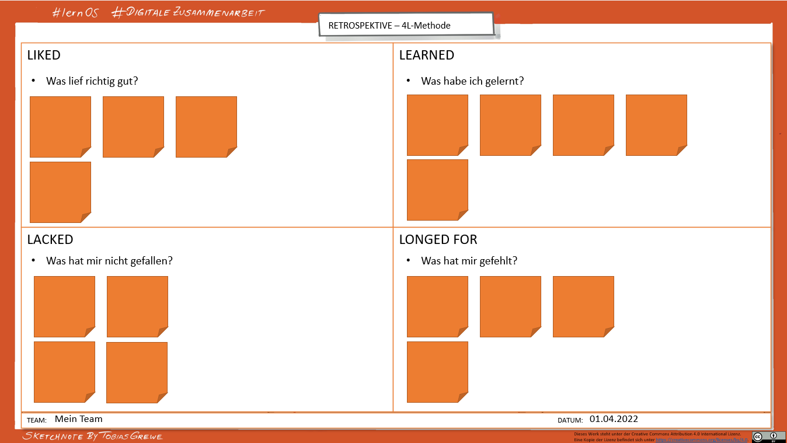
| LIKED | LEARNED |
|---|---|
| Was lief richtig gut? | Was habe ich gelernt? |
| LACKED | LONGED FOR |
| Was hat mir nicht gefallen? | Was hat mir gefehlt? |
Du findest eine PowerPoint-Vorlage hierzu unter Vorlagen.
| Ab sofort nutzen |
Mehr davon | Weniger davon | Nicht mehr nutzen |
Weiter nutzen |
|---|---|---|---|---|
Templates bzw. Vorlagen nutzen:
Weiterführendes Material:
Anleitungen:
Beispiele:
Sucht euch eine der oben erkundeten Vorlagen aus und macht anhand dieser Retrospektive einen Circle-Boxenstopp. Reflektiert gemeinsam, wie eure bisherige Zusammenarbeit im Circle gelaufen ist, was ihr auf jeden Fall beibehalten und was ihr weglassen wollt. Das wird die Aufgabe in der nächsten Woche sein. Macht euch dazu Gedanken, so dass ihr beim nächsten Treffen zeitnah loslegen könnt.
Wenn ihr die Retro innerhalb der Lernreise ausprobiert habt, könnt ihr euch im nächsten Schritt daran wagen, diese mal im eigenen Team oder einer anderen Gruppe auszuprobieren.
Zusammenarbeit (Teil 2)
Lese dir zur Vorbereitung die Grundlagen durch:
Theorie
“Gemeinsam an Dokumenten arbeiten”
Beantworte und reflektiere die folgenden Fragen:
Erstelle Beiträge für die gemeinsame Sammlung “die besten Hacks für
die digitale Zusammenarbeit” und lege sie in eine gemeinsame
Datei.
Die Frage ist: Wie schafft ihr das jetzt asynchron abzustimmen, welches
Tool ihr wählt und wo ihr die Datei ablegt?
In Wie
teile ich Dokumente in einem Chat? (Beispiel M365) findet ihr
Inspirationen dazu.
Verwendet im Circle-Treffen eure gemeinsame Sammlung “die besten Hacks für die digitale Zusammenarbeit” und überlegt euch eine gemeinsame Struktur. Wie lief die asynchrone Zusammenarbeit?
Asynchron weiter zusammen arbeiten:
Lese dir zur Vorbereitung die Grundlagen durch:
Meetings
effizient gestalten
Schaue dir als Rückblick auch noch einmal die Theorie unter Kommunikation (Themenbereich: Meetings) an.
In Kata 5 - Wähle einen passenden Kanal
haben wir dich gefragt:
“Muss es denn ein Meeting sein, wenn alle einer Person beim Sprechen
zuhören?”
Greife dir ein Meeting aus dem Kalender der letzten Wochen heraus, zu dem du selbst eingeladen hast und beantworte die folgenden Fragen:
Plane dein nächstes berufliches Meeting unter Berücksichtigung der gewonnenen Erkenntnisse und bisher gemachten Erfahrungen. Teile im nächsten Circle, wie es gelaufen ist.
Lege ein gemeinsames Dokument / eine OneNote-Seite / eine Wiki-Seite
für das Meeting an, auf der du mit deinem Team vor dem Treffen die zu
besprechenden Themen planst und damit eine Agenda zusammen
stellst.
Überlegt für jeden Punkt, ob dieser “live” (synchron) besprochen werden
muss oder (zumindest zum Teil) bereits vorab (asynchron) geklärt werden
kann.
Wer einen Punkt auf die Agenda gestellt hat, ist auch als “Topic Owner” verantwortlich,
Wenn du in Meetings gemeinsam Entscheidungen mit dem Team treffen oder in der Gruppe treffen möchtest, kannst du folgende Dinge ausprobieren:
Wissen teilen
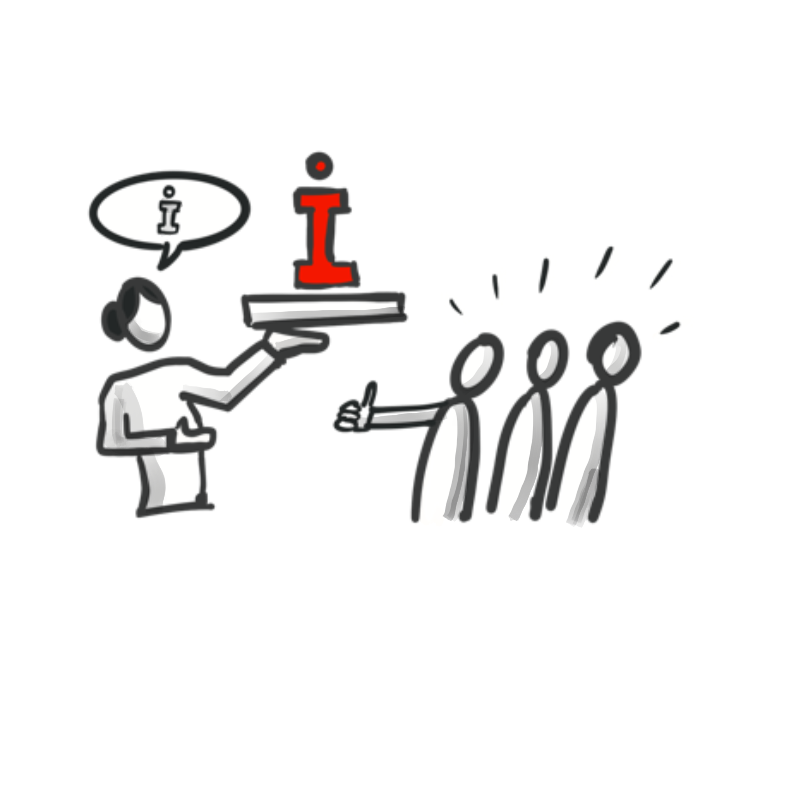
Zum Einstieg in den Bereich “Wissen teilen” schau dir die Grundlagen zu Wissensmanagement an.
Beispiele für Wissen teilen: Arten und Formate haben wir dir zusammengestellt.
Werde konkret für deinen beruflichen Kontext und wähle dir ein Thema aus, das dich interessiert:
Und jetzt gehen wir einen Schritt weiter und wechseln die Perspektive:
Bezogen auf “Wie profitierst du vom Wissen anderer?” UND “Wie zeigst
du Dankbarkeit?”:
Welche Unterschiede nimmst du zwischen dienstlichen und privaten
Interaktionen wahr?
Wie kannst du im beruflichen Kontext Dankbarkeit zeigen und damit
z.B. deine Kolleg:innen wertschätzen, die ihr Wissen mit dir geteilt
haben?
Anregungen findest du hier unter Likes
sind mehr als Wertschätzung (Harald Schirmer) und 30 Wege,
Dankbarkeit zu zeigen.
Probiere andere Formen der Dankbarkeit in deinem Arbeitsumfeld aus, die du gerade gelernt hast, und zeige aktiv deine Wertschätzung - und sei gespannt, wie diese Art von “Feedback” Wirkung zeigt.
Dankbarkeits-Termin: Richte dir einen regelmäßigen wöchentlichen Termin ein (z.B. vor dem Wochenende) und überlege, wie du in der vergangenen Woche von dem Wissen anderer profitierst hast oder wie dich Kolleg:innen bei deiner Arbeit unterstützt haben. Zeige Deine Dankbarkeit - auf deine Art.
Berichte in deinem Team und gib deine Erfahrungen aus dieser Übung weiter.
Sichtbar werden ist eines der Grundprinzipen von Working Out Loud.
“Mit Working Out Loud kannst du Beziehungen aufbauen, die dir helfen, ein Ziel zu erreichen oder etwas Neues zu lernen. Anstatt Netzwerke zu knüpfen, um etwas zu bekommen, investierst du in Beziehungen: Dazu leistest du Beiträge, die deine Arbeit und Erfahrungen sichtbar werden lassen.” (John Stepper)
Überlege dir: Wie kannst du in deinem Unternehmen sichtbar
werden?
Das Sichtbarwerden ist abhängig von vielen Dingen, wie z.B. deinem
Arbeitsumfeld, deinem Arbeitskontext. Es gibt so etliche und ungeahnte
Möglichkeiten, deshalb sei neugierig und offen, beobachte für dich
interessante Personen (innerhalb/außerhalb deines Unternehmens) und
reflektiere, was zu dir passt und was du davon selbst anwenden
kannst.
Es wird konkreter:
Checke deine online-Profile (Unternehmensprofil, gerne auch deine social Media-Profile etc.) und aktualisiere sie mit Hilfe deiner erstellten Liste.
Suche gezielt Foren/Communities zu deinen Themen innerhalb deines Unternehmens und zeige dein Interesse, indem du ihnen aktiv beitrittst. Wie gesagt, oft reicht ein erster, kleiner Schritt. Trau dich.
Schau Dir den lernOS Lernpfad Offenheit & Vernetzung an. (Überblick - lernOS für Dich Leitfaden)
Suche dir ein entsprechendes Forum und beantworte dort eine Frage,
die gestellt wurde. Damit hilfst du der Person, die gefragt hat, ebenso
wie allen anderen, die zu einem späteren Zeitpunkt deine Antwort
lesen.
Wenn du noch mehr machen möchtest: Erforsche, welche anderen Formate zum
Sichtbarwerden es in diesem Forum gibt und probiere es einfach mal
aus.
Du kannst auch gerne die gemeinsame Sammlung der “Digitale Zusammenarbeit-Hacks” aus Kata 7 - Dokumente gemeinsam bearbeiten als Inspiration nutzen, um dein Wissen weiterzugeben.
In der Kata 9 - Wie kannst Du selbst vom
Wissen anderer profitieren und Dankbarkeit zeigen (#Nehmen)? hast du
dir Gedanken gemacht, wie du von anderen profitierst. Das war die
Vor-Übung zu dieser hier:
Werde konkret für deinen beruflichen Kontext und wähle dir ein Thema
aus, für das du ein Experte bist oder das dich besonders interessiert:
Wie und wo hast du bisher dein Wissen dazu mit anderen geteilt (Art,
Format)?
Wie kannst du in deinem Arbeitsumfeld noch mit weiteren Formaten dein Wissen teilen, damit andere davon profitieren können? Schreibe alle Arten und Formate auf, die dir in deinem Arbeitsumfeld zur Verfügung stehen - auch wenn du nicht jede davon jetzt schon umsetzen kannst (z.B. Post in eurer Yammer-Community erstellen).
Hier findest du nochmal Beispiele für Wissen teilen: Arten und Formate.
“Wissen teilen” - das ist gar nicht so schwer.
Ganz einfaches Beispiel: Wenn du Microsoft-Office Produkte nutzt, kannst
du in den meisten Anwendungen mit dem Shortcut Strg+K,
einen Link erstellen. Das funktioniert in Outlook genauso wie in OneNote
oder Word, d.h. diesen Shortcut kann man immer gut gebrauchen - man ist
damit einfach schneller. Dieser Workhack lässt sich einfach und schnell
im nächsten Teammeeting teilen.
Nun überlege für dein Thema:
Betrachte nochmal deine Hindernisse und Bedenken, dein Wissen zu teilen. Sein Wissen offen mit anderen zu teilen, erfordert auch Mut. Aber Mut ist wie ein Muskel, der trainiert werden kann. Denke an den kleinen Workhack Shortcut Strg+K - habe keine Angst, ganz kleine Dinge zu teilen, denn später klappt es auch mit den großen Sachen.
Und jetzt gehst du einen Schritt weiter und teilst ganz aktiv dein Wissen zu einem Thema, für das du Experte bist. Gerne kannst du das in deinem beruflichen Arbeitsumfeld tun.
Mach dir Gedanken: Was habe ich davon, mein Wissen zu teilen?
Zum Beispiel:
Teile deine Erfahrungen und Erkenntnisse mit deinen eigenen
Arbeitskolleg:innen und überlegt gemeinsam: Was könnt ihr konkret tun,
damit Wissen im Team, in der Community etc. geteilt wird?
z.B. Einführung des Agendapunktes “Workhack - was habe ich Tolles in
dieser Woche gelernt?” in jedem Teammeeting.
Teile deine Arbeit - auch wenn sie noch “in Arbeit” ist:
Durch das Teilen einiger Aspekte deiner Arbeit - was du tust, warum und
wie - kannst du andere inspirieren oder von anderen lernen, die etwas
ähnliches tun, oder Möglichkeiten für Innovation und Zusammenarbeit
schaffen. Verpacke deinen Beitrag in einer Art und Weise, die sich nicht
nach “Schau’ mich an!” sondern eher nach “Ich glaube, dies hier könnte
hilfreich und interessant für dich sein.” anfühlt.
Teile Deine Erfahrungen und Lessons Learned:
Reflektiere deine Arbeitsweise. Was hast du gelernt - sowohl von Fehlern
als auch von Erfolgen - und was könnte nützlich für andere sein? Es
können Ressourcen sein, die dir geholfen haben oder Techniken, die dich
vorangebracht haben, oder Fehler, die andere vermeiden sollten. Denke
daran, es als Beitrag zu verpacken, der anderen deine Erkenntnisse in
einer Art anbietet, die für sie hilfreich ist.
Du kannst auch gerne die gemeinsame Sammlung der “Digitale Zusammenarbeit-Hacks” aus Kata 7 - Dokumente gemeinsam bearbeiten als Inspiration nutzen, um dein Wissen weiterzugeben.
Sammelt eure Erfahrungen und Lessons Learned in einem weiteren gemeinsamen Dokument im Circle. Auf dieses könnt ihr nächste Woche in Kata 12 - Selbstreflexion zurückgreifen.
Abschluss & Nachbereitung
Du hast dich auf den Weg gemacht. Wie weit bist du gekommen und wie geht es für dich weiter?
Hast du Freude an der digitalen Zusammenarbeit entdeckt? Was nimmst du dir als nächstes vor?
Es ist Zeit, die hinter dir liegenden Lernerfahrungen zu reflektieren und gleichzeitig zu schauen, wie es mit dem Thema für dich weitergehen kann.
Schaue dir dazu noch mal dein am Anfang erstelltes lernOS-Canvas an und beantworte dazu die folgenden Fragen:
Synchrone Kommunikation
syn·chron: gleichzeitig; mit gleicher Geschwindigkeit [ab]laufend
Die Kommunikationspartner:innen begeben sich zur gleichen Zeit in die Kommunikationssituation.
Beispiele: direktes Gespräch/Meeting, Video-/Audio-Call
Vorteile: direkter und schneller Austausch
Nachteile: Fehlende Interaktionsregeln oder mangelnde Rücksichtnahme. Man muss die genutzte Technik beherrschen.
Asynchrone Kommunikation
asyn·chron: nicht synchron, nicht gleichzeitig, nicht mit gleicher Geschwindigkeit [ab]laufend
Die Beiträge zur Kommunikation erfolgen zeitlich versetzt.
Beispiele: Brief, Fax, E-Mail, Chat
(Hinweis: E-Mail und Chat wird oftmals als synchrones
Kommunikationsmittel missbraucht!)
Vorteile: keine unmittelbare Reaktion nötig. Personen können selbst entscheiden, wann und wie sie reagieren.
Nachteile: Antworten kommen ggf. zu spät oder werden sogar vergessen. Informationen sind u. U. schwerer aufzufinden und die Bezüge von Nachrichten unklar. Dies kann zu Missverständnissen führen.
Hier noch mal die verschiedenen Kombinationen in der Übersicht:
| Matrix | Synchron | Asynchron |
|---|---|---|
| Persönlich (1:1) |
Anruf Videocall |
E-Mail Chat |
| Gruppe (1:N) |
Telefon/Audiokonferenz Videokonferenz |
E-Mail-Verteiler MS Teams Kanal Gruppenchat ESN |
Push:
Beispiel: E-Mail
Merkmale:
Sender:in definiert Empfänger:in
Sender:in entscheidet, was wichtig für Empfänger:in ist
Empfänger:in ist passiv
Geschlossene Kommunikation an Einzelperson oder einen gezielten Personenkreis
Empfänger:in ist extrinsisch motiviert
Pull:
Beispiel: Chat in Teams, Post im ESN (Enterprise Social Network = soziales Netzwerk im Unternehmen)
Merkmale:
Sender:in veröffentlicht Information
Empfänger:in entscheidet, was für sie oder ihn wichtig ist
Empfänger:in ist aktiv
Offene Kommunikation an alle im Unternehmen oder eine Gruppe oder ins Team
Empfänger:in ist intrinsisch motiviert
Eingehende E-Mail-Kommunikation
Klassifiziere deine E-Mails und Nachrichten:
Erledigen (Fünf-Minuten-Regel)
Terminieren/Aufgabe definieren
Weiterleiten/delegieren
Archivieren
Löschen
Beantworte E-Mail nicht sofort, sondern lege Zeitfenster für die Beantwortung fest.
Stelle E-Mail-Benachrichtigungen in deinen Outlookeinstellungen ab, wenn sie dich ablenken.
Ausgehende E-Mail-Kommunikation
Tipps für E-Mail- und Chat-Kommunikation
Im Betreff definieren um was es geht (auch in Team-Chat sehr sinnvoll)
Das Wichtigste zuerst nennen
Kurze Aussagen treffen, klare Botschaften senden
Texte strukturieren (Formatierungen nutzen, Links im Text einsetzen)
Deadlines nennen
Kommunikation und Entscheidungsfenster terminieren
Vermeide CC-E-Mail. CC-E-Mails sind nicht ehrlich und nicht transparent.
Inhalte sind oftmals nicht für alle Empfänger verständlich
Keiner der in CC gesetzten fühlt sich zuständig
Keiner der in CC gesetzten ist wirklich informiert
Die Kommunikation der AN-Adressierten wird auf einmal für andere öffentlich gemacht, die nicht im Thema sind
Tipps zum Umgang mit Dateien
Kein „Drag & Drop” in Chat Nachrichten nutzen
nur noch E-Mails mit Links verschicken (keine Anhänge!)
Tipp: Wann schreibe ich eine E-Mail? Wann eine Chat-Nachricht?
E-Mail:
Informationen sind auch für Personen relevant, die nicht Teil eines Teams oder Gruppe sind. (zu prüfen: ggf. ist es sinnvoll zu einem Thema eine neue Chat-Gruppe zu eröffnen).
Informationen haben einen „offiziellen” Charakter
Informationen haben besondere Compliance-Anforderungen
(z. B. muss revisionssicher abgelegt werden)
Chat:
Team- und Gruppen-Kommunikation (statt CC-E-Mails)
Information soll einer Gruppe längere Zeit zur Verfügung stehen
Kurze Fragen / Antworten
(„ist das Bild auf Seite xx final? Ist der Text freigegeben? Können wir
den Termin verschieben?“)
Diskussionen und Feedback zu einem Thema
(„ich brauche Eure Meinung zu…, Welche Punkte müssen wir
berücksichtigen?“)
Chat ist schneller und leichtgewichtiger als E-Mail.
Bedenke aber, dass die Zielgruppe häufig größer und offener
ist.
Eingehende Chat-Kommunikation
Nutze in Teams die individuellen Benachrichtigungsoptionen
(pro Team / pro Kanal).
Vereinbare Chat-Regeln mit deinem Team (z. B. Reaktionszeiten).
Lass dich vom Arbeitsverhalten anderer nicht „anstecken”.
Nutze @-Mention um sicherzugehen, dass du Personen erreichst.
Pflege und nutze z.B. die Statusanzeige in Teams.
Nutze die Option „nicht stören” konsequent zur
Konzentrationsarbeit.
Erlaube ggf. bestimmten Personen „Prioritätszugriff”.
Nutze die Einstellung der “Ruhezeiten” in der Teams App auf mobilen Geräten.
Auf eingehende Nachrichten reagieren: Like, Antworten oder Weiterleiten
Ausgehende Chat-Kommunikation
#nohello: bitte schreibe nicht einfach nur “Hallo” im Chat, sondern benenne direkt dein Anliegen oder die Fragestellung.
Es geht um schnelle und unkomplizierte Kommunikation.
Schreibe so kurz und einfach wie möglich (kein langer E-Mail-Text).
Verwende @-Mention, wenn du jemanden direkt ansprechen willst.
Ausgehende Meeting-Anfragen
Wann vereinbare ich ein Meeting?
Möchte ich Personen nur informieren oder brauche ich auch Feedback/Gespräche?
Was kann asynchron – was sollte synchron (=gemeinsam) erledigt werden?
Achtung: Monologe in Meetings sind ein Indikator dafür, dass etwas genauso gut auch asynchron erledigt werden könnte.
Tipps, um Zeit zu sparen:
Teile Präsentationen/Dokumente mit Personen und frage konkretes Feedback per Chat ab.
Vergebe VOR dem Meeting “Hausaufgaben” (z.B. „bitte Präsentation vorher durchlesen”), damit die Zeit im Meeting zum Austausch genutzt werden kann.
Tipps für Organisator:innen
Hinterfrage: lässt sich das Thema nur in einem Meeting erarbeiten?
Versende Termineinladungen mit Ziel, Agenda und Aufgaben.
Die Rollen für das Meeting sind geklärt.
Starte pünktlich und beende das Meeting bereits 5 Minuten vor der terminierten Uhrzeit.
Teste techn. Einstellungen vor dem Start des Meetings.
Nach dem Meeting ist allen klar, was als nächstes passiert.
Erstelle ein Meeting-Protokoll:
Was wurde besprochen/beschlossen?
Wer nimmt welche Aufgaben mit?
Eingehende Meeting-Anfragen
Tipps für Teilnehmer:innen
Lehne eine Einladung ab, wenn Du nicht weißt, warum Du bei einem Meeting mit dabei sein sollst.
Erscheine pünktlich und vorbereitet zum Termin.
„Multitasking” ist unhöflich (und funktioniert auch nicht). Das gilt auch für Online-Meetings.
Gebe Feedback (nutze z. B. den Besprechungschat / Emojis).
Wenn du eine Aufgabe verteilst…
Definiere im Betreff, worum es geht (auch in Team-Chat sehr sinnvoll).
Nenne das Wichtigste zuerst.
Treffe kurze Aussagen und sende klare Botschaften.
Strukturiere Texte (Formatierungen nutzen, Links im Text einsetzen).
Nenne Deadlines.
Terminiere Kommunikation und Entscheidungsfenster.
Wenn du eine Aufgabe erhältst, …
Tipps zur Priorisierung & Aufgabenplanung
Aufgabenüberblick + Deadlines digital nachhalten (digitalen Kalender pflegen).
Neue Aufgaben gegen eigene Ziele prüfen (Helfersyndrom unterdrücken).
Nicht überrumpeln lassen: deine Arbeitszeit ist begrenzt.
Falls Informationen fehlen: Zeitfenster für Aufgaben abfragen und oder selbst definieren.
Pflege deine ToDos als „gleichberechtigte” Termine.
Plane vorausschauend.
Was brauche ich, damit ich meine Aufgabe erledigen kann? Fehlen mir z. B. klare Deadlines oder Informationen?
Wie lange brauche ich für die Aufgabe?
Wann erledige ich diese Aufgabe (inkl. festen Termineintrag)?
Was muss ich zurückstellen, um diese Aufgabe zu erledigen?
Signalisiere anderen frühzeitig, wenn eine Aufgabe nicht rechtzeitig erledigt werden kann.
Pflege deine Aufgaben an EINEM Ort (am besten digital).
Nutze z. B. ToDo und Planner, um Aufgabenübersichten zu erstellen
(Vorteil: direkte Verbindung zu Chat & E-Mail).
Hin und her springen vermeiden.
Suche nach Infos auf ein Minimum beschränken.
Wissenstreppe
Die Wissenstreppe von Prof. Klaus North erläutert anschaulich, wie Daten, Informationen und Wissen sowie schließlich Können, Handeln und Kompetenz zusammenhängen bzw. aufeinander aufbauen. Sie setzt dies in Beziehung zu einem Modell für operatives Wissensmanagement - quasi bottom-up ausgehend von dem Management der Daten und Informationen - und strategischem Wissensmanagement, das quasi top-down eine Sichtweise ausgehend von der Kompetenz und damit der Wettbewerbsfähigkeit als Ziel nimmt.
Mehr dazu hier:
https://wissensmanagement.open-academy.com/category/grundlagen/wissensmanagement-modelle/wissenstreppe
In diesem Video erläutert Dr. Angelika Mittelmann die Wissenstreppe anhand eines „echten” Modells: Die Wissenstreppe
Dimensionen des Wissens
Individuelles vs. Kollektives Wissen
Internes vs. Externes Wissen
Explizites vs. Implizites Wissen
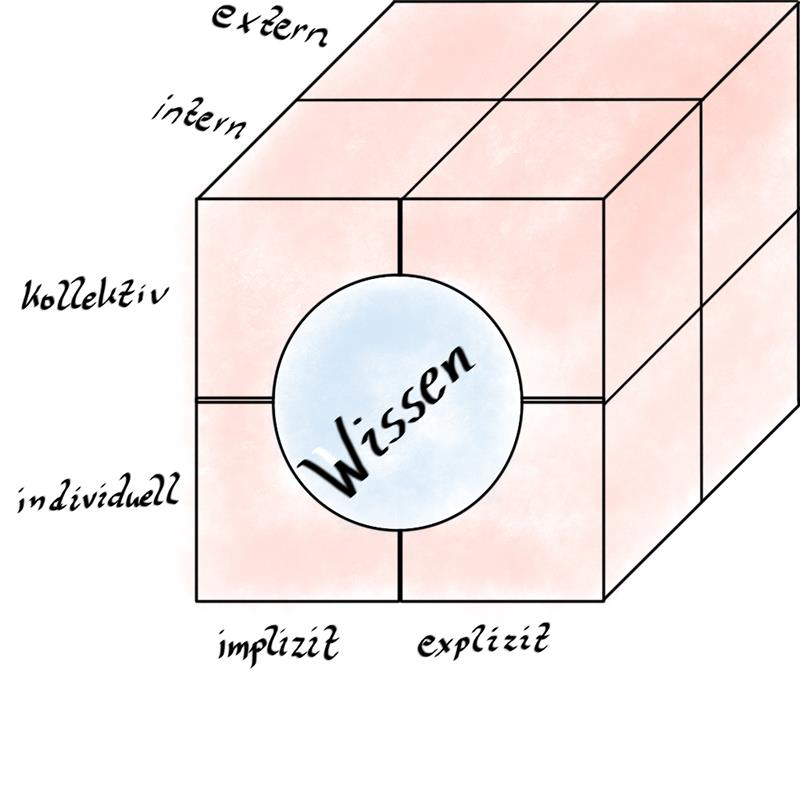
Wissen & Wissensmanagement - Früher & Heute
“Wissensmanagement 1.0” - Dokumenten-Management (ab Mitte der 90er Jahre)
“Enterprise 2.0” - Beginn der Digitalen Zusammenarbeit (ab 2006)
Beispiele für Wissen teilen
Arten und Formate
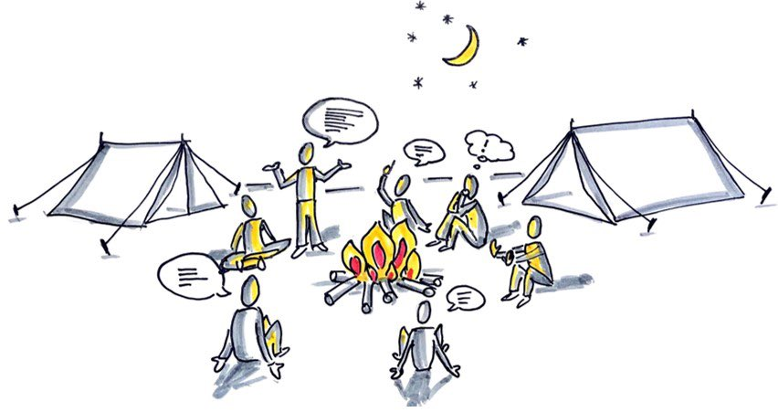
Sketchnote “Austausch am Lagerfeuer” Tobias Grewe
Das Gespräch ist die häufigste Form des Wissenteilens. Aber: Es ist nicht skalierbar, es sei denn man kann es unabhängig von Zeit und Raum nutzbar machen. Durch Dokumentation (Aufschreiben, Aufzeichnen, etc.) wird das Wissen explizit und damit verfügbar.
Es gibt so viele Arten sein Wissen zu teilen: das Gespräch, die
zufällige Begegnung, Community, Intranet, Newsletter etc..
Die Arten zur Wissenserfassung/-vermittlung lassen sich reduzieren
auf:
Gespräch (persönlicher Austausch, Telefonkonferenz, Schulung, etc.)
Handschriftlich (Block und Bleistift, Flipchart, Sketchnote)
Dokument/Datei (Word, Excel, PowerPoint, Mail, aber auch OneNote, Mindmaps, etc.)
Beiträge (Blog, Communities, Foren, Wiki, etc.)
Bild (Screenshot, Foto von Flipcharts, Graphik, etc.)
Video (Screencast, Video mit verschiedenen Tools, etc.)
Audio (Diktiergerät des Smartphones, Podcast, etc.)
Überblick (Linksammlungen, kuratierte Listen, etc.)
Kennst du alle hier gelisteten Tools? Suche sie im Internet mit “Was ist… ?” oder frage in deinem Circle nach.
Die Graphik von Tanmay Vora unter folgendem Link erläutert die 5 Elemente von Working Out Loud. Sie bezieht sich auf WOL als Ganzes, als Mindset - nicht nur auf die Circle Methode: https://qaspire.com/2017/01/26/5-elements-of-working-out-loud-by-johnstepper/
Die 5 Elemente von WOL hängen alle eng zusammen. Im Folgenden liegt
der Fokus allerdings auf “Sichtbar werden”, was in der Graphik “Visible
Work” entspricht.
Weiterführende Infos: lernOS Lernpfad Offenheit & Vernetzung (Überblick
- lernOS für Dich Leitfaden (cogneon.github.io))
Regeln für die Zusammenarbeit
Grundlagen:
Microsoft:
The Social Collaboration Contract
Vertiefung:
Idee für die Erarbeitung der Regeln für die Zusammenarbeit im
Team:
Arbeitsvereinbarungen|Atlassian
Canvas
Wir haben in PowerPoint einen Collaboration Canvas vorbereitet, den ihr zum Festhalten eurer Regeln für die Zusammenarbeit verwenden könnt (siehe Vorlagen).
Ihr könnt aber auch das folgende Bild als Hintergrund für andere Tools nutzen:
Als Alternative zum Canvas könnt ihr folgenden Text als Vorlage/Idee/Anregung in einem Tool eurer Wahl verwenden:
Regeln für unsere Zusammenarbeit im lernOS Circle:
Ziel: Unser lernOS Circle hat als gemeinsames Ziel [Ziel formulieren]
Für die Zusammenarbeit im Team legen wir folgende Regeln für die Zusammenarbeit fest:
Purpose / Ziel
Interaktion
Wir treffen uns [1x wöchentlich - Dauer, Rhythmus, Ort, Zeitpunkt]. Wenn wir Video nutzen, werden wir als Videokonferenzlösung für Treffen [Videokonferenztool] verwenden.
Wir werden uns die Dokumente nicht gegenseitig per E-Mail zusenden, sondern die Links zu den Dokumenten in unserer [Dokumentenbibliothek] veröffentlichen und gemeinsam nutzen.
Aktion
Wir werden in der Zeit dazwischen unsere Aufgaben erledigen und sie für das nächste Treffen vorbereiten.
Wir verpflichten uns gegenseitig, den Vertrag über die Zusammenarbeit einzuhalten.
Kommunikation, informell (spontan, sozial, schnell)
Kommunikation, fachlich
Wir sind dafür verantwortlich, vor dem nächsten Treffen uns in unserem [Kommunikationstool] über Neuigkeiten zu informieren.
Konstruktiv: Für den fachlichen Austausch nutzen wir [Kanal im Kommunikationstool].
Dokumentation
Wir werden unser [OneNote-Notizbuch] für alle Treffen als Dokumentation verwenden.
Wir werden [Name des Tools (z. B. Planner)] verwenden, um den Aufgabenstatus zu erfassen und unseren Status und die wichtigsten Meilensteine auf dem neuesten Stand zu halten.
Wir stellen sicher, dass die gesamte Arbeit (auch Dokumente, die noch in Arbeit sind) in der vereinbarten [Dokumentenbibliothek] gespeichert wird.
Optional: Wir werden diese spezielle [Ordner-/Bibliotheksstruktur] verwenden, um unsere Teamdokumente zu organisieren.
Freigabe von Dokumenten in der Cloud (Beispiel M365)
Tipp: Gemeinsam gleichzeitig an einem Dokument arbeiten
Möchte man gemeinsam Inhalte in einem Dokument bearbeiten, mussten
oftmals bisher mühsam Korrekturen und Beiträge einzelner Personen Stück
für Stück in einem Dokument konsolidiert werden. Sobald Dokumente in der
Cloud (beispielsweise auf SharePoint TeamSites oder in OneDrive)
gespeichert sind, gibt es die Möglichkeit, dass mehrere Personen
gleichzeitig an einem Dokument arbeiten (über Freigabe per Link (siehe
Tipp 4)).
Link
zu weiteren Informationen & Anleitungen.
Tipp: Automatische Versionierung in Cloud Ablagen nutzen
Durch die Ablage in der Microsoft Cloud, werden Arbeitsstände von
Dokumenten automatisch gespeichert und Versionen eines Dokuments
nachgehalten. Falls man gemeinsam an Dokumenten arbeitet, gibt diese
Funktion allen die Sicherheit, dass Dokumente und Arbeitsstände nicht
aus Versehen gelöscht/überschieben und dadurch verloren gehen
können.
Link
zu weiteren Informationen & Anleitungen.
Tipp: Änderungen nachverfolgen
Neben der Automatischen Versionierung bieten Word, Excel und PowerPoint
Dokumente die Möglichkeit Änderungen nachzuverfolgen. Dadurch kann jeder
sehen, welche Inhalte wann und von welcher Person bearbeitet wurden. Die
Änderungsverfolgung lässt sich leicht im Hauptmenüpunkt “Überprüfen” an-
und ausschalten.
Link
zu weiteren Informationen & Anleitungen.
Tipp: Kommentarfunktion im Dokument nutzen
In Word, Excel und PowerPoint gibt es die Möglichkeit gezielt Kommentare
z. B. an Textstellen, zu hinterlassen. Alle Personen, die das Dokument
nutzen, können die Kommentare lesen und darauf antworten. So können
Fragen, Informationen und Antworten zu den Inhalten in einem Dokument
schnell und einfach ausgetauscht werden.
Link
zu weiteren Informationen & Anleitungen.
Tipp: Dateien per Link teilen
Es ist ratsam Dateien immer zuerst auf der Cloud Ablage (z. B. TeamSite
oder im pers. OneDrive) abzulegen und dann die Datei per Link im
Teamskanal, einem 1:1 Chat oder Gruppenchat zu teilen. So bleibt die
Datei am gewählten Ablageort. Teilt man eine Datei einfach per Drag
& Drop in einem Chat wird diese automatisch im Kanalordner (Teams
Chat) oder im OneDrive eines der Chatgruppen Teilnehmenden abgelegt. Es
wird somit also eine Kopie der ursprünglichen Datei erzeugt.
Wie teile ich Dokumente in einem Chat? (Beispiel M365)
Chat-Kommunikation ist für die Zusammenarbeit in einer Gruppe sehr wichtig. In Microsoft Teams gibt es dafür mehrere Möglichkeiten: man kann in einem Team in MS Teams die Kanäle nutzen - oder im persönlichen Chat Bereich einen Gruppenchat anlegen. Auch Besprechungschats werden oft für die Gruppenkommunikation genutzt. Die Optionen sind jeweils für unterschiedliche Anwendungsfälle sinnvoll, unterscheiden sich aber in wichtigen Details, wenn man per Chat auch Dokumente teilen möchte.
| Teams-Kanal | Gruppenchat | Besprechungschat |
|---|---|---|
| Vorteile: | Vorteile: | Vorteile: |
| Geteilte Dateien werden automatisch auf der TeamSite im entsprechenden Kanalordner abgelegt. Alle Teammitglieder (auch externe Personen/Gäste) haben automatisch auf Dateien Zugriff, die über die TeamSite und/oder direkt im Kanal geteilt werden. (wird auch beim Verlassen des Teams wieder entfernt!) | Wenn eine neue Person zum Gruppenchat hinzugefügt wird, kann individuell entschieden werden, ob die Historie des Chats gesamtheitlich, teilweise oder gar nicht zur Einsicht freigegeben werden soll. | Eignet sich gut für die Chat Kommunikation während und kurz nach einem Termin. |
| Nachteile: | Nachteile: | Nachteile: |
| Intransparente Dateiablage | Intransparente Dateiablage | |
| Keine direkte Einbindung von Personen außerhalb der M365-Gruppe möglich. | Auch wenn alle Dateien scheinbar geordnet im Dateien Reiter des Chats sichtbar sind: es gibt es keine gemeinsame Dateiablage. Die geteilte Datei wird jeweils bei der Person im OneDrive im Ordner “Microsoft Teams Chat Dateien” abgelegt. Dort landen alle Dateien, die in 1:1 Chats, Gruppenchats und Besprechungschats von der Person per Drag & Drop geteilt wurden. Diese Ablage kann also schnell sehr unübersichtlich werden und viel Speicherplatz einnehmen. | Auch wenn alle Dateien scheinbar geordnet im Dateien Reiter des Chats sichtbar sind: es gibt es keine gemeinsame Dateiablage (Details siehe Beschreibung “Gruppenchat”). |
| Personen, die später zum Chat hinzugefügt werden, haben nicht automatisch auf die geteilten Dateien Zugriff. Sobald eine externe Person (= Gäste im genutzten M365 Tenant) dem Gruppenchat beitritt können keine Dateien mehr geteilt werden. Gäste können nicht auf die geteilten Dateien zugreifen. | Externe Personen (= Gäste im genutzten M365 Tenant) können geteilte Dateien nur sehen und abrufen, wenn sie einen Gast Account besitzen und sich auch über diesen Account in die Besprechung eingewählt haben. |
verschiedene Tools zur gemeinsamen Texterstellung
Wie du mit einer besseren Organisation und Gestaltung deiner Meetings mehr Zeit für das Wesentliche gewinnst.
Meetings - Wofür?
Entscheidungen
Abstimmungen
Brainstorming & Ideation
Präsentation von Ergebnissen (Pitch)
Austausch / Dialog & Lernen (Schulung)
Meeting = noch nicht abgeklärte, offene Punkte
Alles, was persönlich & live besprochen werden soll.
≠ Aber NICHT für Information!
Was braucht es?
Agenda - Was steht an?
Ziel - Was wollen wir erreichen?
Einladung - nur an relevante Teilnehmer:innen
(= können ein Beitrag zur Zielerreichung leisten)
Zeitrahmen
Ergebnisprotokoll – Aufgaben, Verantwortlichkeiten
Wie machen wir das?
Wir erstellen Agenda & Protokoll gemeinsam. Live.
Wir kommen vorbereitet und kennen die Materialien.
Keine Agenda - kein Meeting!
Wir gehen aus dem Meeting raus und kennen die nächsten
Schritte:
jede:r weiß, was zu tun ist.
Was kann im Vorfeld oder während des Meetings im Chat geklärt werden?
„Müssen wir diesen Punkt „live” klären -
oder geht das auch asynchron im Netzwerk?”
Abstimmung durch „Like”
Offene Punkte / zu klärende Fragen im Kommentar
Keine Scheu vor „dummen Fragen” = Lern-Gelegenheit!
Hohe Motivation, Punkte vorab zu klären
Reduzierte Agenda bedeutet Kürzere Meetings
Wer einen Punkt auf die Agenda setzt, ist als Topic Owner dafür verantwortlich:
Materialien / Unterlagen zum Einlesen rechtzeitig bereitstellen
3 Tage vorher - sonst Verschiebung zum nächsten Termin
Klären von Fragen im Chat
Protokoll-Verantwortung: Schluss-Redaktion
Im Meeting:
Alle Rollen & Aufgaben werden von allen Beteiligten übernommen
Topic Owner = Moderatoren für ihre TOPs
Alle anderen sind aktiv beteiligt - in der Diskussion oder am Protokoll
Vorteile von effizient gestalteten Meetings:
Weniger & kürzere Meetings
Entscheidungsprozess: Schnellere Ergebnisse und Zeitersparnis
Mitarbeitende: Höhere Motivation & Engagement durch aktive Beteiligung
Virale Verbreitung in andere Projektteams
Wer die Vorteile erlebt hat, will nicht mehr zurück!
Lernen aus Erfahrung ist ein wichtiger Aspekt in der (digitalen) Zusammenarbeit. Es geht darum das Geschehene zu reflektieren und daraus Erkenntnisse abzuleiten, die zukünftig berücksichtigt werden, um die Zusammenarbeit zu verbessern.
Exemplarisch findest du hier zwei ausgewählte Definitionen für Retrospektive (Retrospective oder auch kurz Retro):
- “Retrospektive (lat. retrospectare „zurückblicken”) bezeichnet einen Rückblick auf bereits geschehene Ereignisse.” (Wikipedia)
- “Retrospektiven sind Teamtreffen, deren Ziel es ist, aus der Vergangenheit zu lernen. „Retrospektiv” bedeutet „rückblickend”. Die Teammitglieder schauen also gemeinsam zurück und bewerten, was gut und was schlecht gelaufen ist. Sie analysieren, warum Dinge gut liefen oder von Erwartungen abwichen, um so Maßnahmen zur Verbesserung zu formulieren und anzugehen. “ (it-agile)
Retrospektiven werden genutzt, um
Reflexion über die Zusammenarbeit anzustoßen,
Verbesserungspotential zu identifizieren,
neugierig und offen zu bleiben,
Neues auszuprobieren,
andere, alte oder neuen Ideen zu adaptieren.
Retrospektiven helfen
sich und die Zusammenarbeit im Team weiterzuentwickeln,
Unstimmigkeiten aus dem Weg zu räumen,
zielgerichteter zu arbeiten
und sich zu fokussieren.
- “Ein „blame game”
Retrospektiven dienen nicht dazu Verantwortung abzuwälzen und anderen Schuld zuzuweisen. Einige Moderator:innen beginnen daher ihre Retrospektiven, indem sie die “Retrospective Prime Directive” vorlesen:
Unabhängig davon was wir entdecken werden - wir verstehen und glauben aufrichtig, dass in der gegebenen Situation, mit dem verfügbaren Wissen und den verfügbaren Ressourcen und den individuellen Fähigkeiten, alle ihr Bestes getan haben. Konzentriere dich darauf, was du in der Zukunft machen wirst.- Ein Laber-Meeting
Wenn Retrospektiven nur ein weiteres Meeting sind, in dem viel geredet wird, daraus aber nichts folgt, d.h. wenn den Retrospektiven keine konkreten Veränderungen, Anpassungen oder Maßnahmen folgen oder niemand sich dafür interessiert, dann sind Retrospektiven Zeitverschwendung.
Aber wenn man die Entscheidungen aus Retros umsetzt, kann man Erstaunliches erreichen! Kleine Änderungen addieren sich auf zu weitreichenden Verbesserungen, wie ein Zinseszinseffekt. Es lohnt sich!”
Aus <https://finding-marbles.com/retr-o-mat/was-ist-eine-agile-retrospektive/>
Vorab wieder zwei Definitionen, damit ihr wisst, was eine Lessons Learned ist:
- “Lessons Learned bezeichnet das Lernen aus Erfahrung, mit dem Ziel, die gewonnenen Erkenntnisse zukünftig aktiv zu nutzen. „Gewonnene Erkenntnisse” ist die gebräuchlichste Übersetzung für den aus dem Englischen stammenden Begriff; „Lektion gelernt” ist eine alternative und vielleicht sogar bessere Übersetzung.” (t2informatik)
- “Lessons Learned sind gewonnene Erkenntnisse, neues Wissen oder Erfahrungen, die während der Arbeit an einem Projekt entstehen, sowie deren Dokumentation. Der innovative Charakter von Projekten bedingt, dass die Projektbeteiligten während eines Projekts beständig neue Erkenntnisse gewinnen. Wenn sie eine solche neue Erkenntnis in geeigneter Weise dokumentieren, wird sie zum Erfahrungswert bzw. zur”Lessons Learned “.
Lessons Learned können sowohl aus positiven als auch aus negativen Erfahrungen abgeleitet werden und beschreiben dementsprechend Optimierungsmöglichkeiten oder Risiken. Sie können sich gleichermaßen auf Aspekte des Managements (z.B. Organisation) und des Projektgegenstands (z.B. Lösungsansatz) beziehen.” (projektmagazin)
Beide Formate - Retrospektive und Lessons Learned - sind darauf angelegt die Art und Weise der Zusammenarbeit zu beleuchten, um so die Herausforderungen und Verbesserungsmöglichkeiten abzuleiten. Es geht um die Fragen “Was lief gut bzw. weniger gut?” und “Was können wir daraus für das nächste Mal lernen?”.
Der Hauptunterschied der beiden Formate ist, dass Lessons Learned am Ende eingesetzt werden, z.B. wenn das Projekt im klassischen Projektmanagement beendet ist oder wenn die Veranstaltung abgeschlossen ist oder etwas Neues eingeführt wurde. Die Ergebnisse werden dann auch für andere zur Verfügung gestellt und geteilt.
Wohingegen die Retrospektive kontinuierlich erfolgt, z.B. regelmäßig im agilen Projektmanagement oder wenn es um die Teamentwicklung geht. Sie bezieht sich auf die Zusammenarbeit im Team.
Die im Leitfaden angesprochenen Vorlagen findet ihr unter:
https://github.com/Magnus-Rode/lernos-digitale-zusammenarbeit/tree/master/de/Vorlagen
Wow, du hast es geschafft! Du hast dich jetzt 12 Wochen intensiv mit dem Thema “digitale Zusammenarbeit” beschäftigt und bist am Ende des Lernpfads angekommen. Herzlichen Glückwunsch!
Wie kann es jetzt weiter gehen? Einige Circles sind zu richtigen Lerngruppen zusammengewachsen und treffen sich weiterhin regelmäßig, vielleicht in größeren zeitlichen Abständen (z.B. alle 2 oder 4 Wochen statt jede Woche). Dabei können bestimmte Themen aus dem Lernpfad nochmal vertieft bearbeitet oder Katas wiederholt werden. Besprich das mit deinem Circle, wie ihr euch zukünftig über eure Lernfortschritte austauschen und euch kollegial beraten könnt, indem ihr neue Anwendungsideen aus euren eigenen Arbeitsfeldern einbringt.
Du hast die letzten Wochen Großartiges geleistet - du hast dich auf den Weg gemacht und bist dran geblieben. Erinnerst du dich noch an die Graphik ganz am Anfang deiner Lernreise?
Die Kraft der kleinen Schritte hat gezeigt, dass es sich lohnt dran zu bleiben - und die Erfolge werden sichtbar - für dich und andere.
Keep calm and learn on!
Ein großer Dank an die vielen Projekte und Vorarbeiten, die die Erstellung und Verwaltung von lernOS Leitfäden ermöglichen.
| Version | Bearbeitet von | Beschreibung Änderung | Datum |
|---|---|---|---|
| 0.1 | Simon Dückert | Erste Version des Template-Repositories | 09.12.2021 |
A
C
E
F
G
I
K
L
M
O
P
R
S
T
V
W
Z